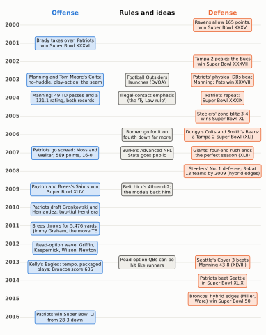
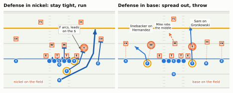
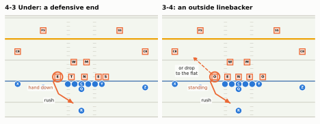
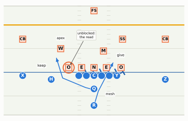

Seventeen seasons of action and reaction: Tampa 2 and the quarterback who solved it, a rule that tilted the field, the Patriots’ shape-shifting offense, the 3-4’s return, the read-option wave, and the first analysts.
Show the Python (shared drawing helpers for this chapter)
import osimport loggingimport numpy as npimport pandas as pdimport matplotlib.pyplot as pltfrom matplotlib.patches import Patch, FancyArrowPatch, Ellipse, FancyBboxPatchfrom matplotlib.lines import Line2Dfrom gridiron import Play, Player, offense, defense, routes as r, show_animation, style, draw_markerimport gridiron.play as _gp# A seam ball from a 7-step drop is thrown hard: about 1.1-1.2 s for 30 yards. gridiron's default ball# speed (18 yd/s) suits shorter, softer throws, so this chapter's one pass play uses a firmer 26 yd/s._gp.BALL_SPEED =26.0logging.getLogger("matplotlib.font_manager").setLevel(logging.ERROR)style.apply()PDF = os.environ.get("RTG_FORMAT", "").lower() in ("pdf", "typst", "print")FIELD_W =160/3HALF = FIELD_W /2# 26.7 yards from the middle of the field to either sidelineTE_RING = style.LINE_TO_GAIN # gold rings for tight ends, as in Personnel Groupingsdef D(key, pos, d, w, label=None):"""A defender at (d, w): d yards past the line of scrimmage, w yards to the offense's right."""return Player(key, pos, "def", d, w, label=label)def O(key, pos, d, w, label=None):return Player(key, pos, "off", d, w, label=label)def line5():"""The five offensive linemen, unlabelled except the center."""return [p for p in offense("singleback") if p.key in ("LT", "LG", "C", "RG", "RT")]def no_numbers(ax):"""Remove the painted yard-line numbers (they sit where wide receivers and corners stand)."""for t inlist(ax.texts):if t.get_alpha() ==0.55: t.remove()def ruler(fld, play, fs=6.5, side="left"):"""Depth labels (yards past the line of scrimmage) down one edge of the window.""" ax = fld.ax x_edge = FIELD_W - fld.y1 +0.35if side =="left"else FIELD_W - fld.y0 -0.35for d inrange(5, 41, 5): y = play.los + dif fld.x0 +0.8<= y <= fld.x1 -0.8: ax.text(x_edge, y, f"{d}"+ (" yd"if d ==5else""), fontsize=fs, color=style.INK_2, ha=side, va="center", zorder=12, bbox=dict(boxstyle="round,pad=0.12", fc=style.SURFACE, ec="none", alpha=0.85))def pointer(fld, play, text, text_at, to, ha="center", fs=7.0):"""A labelled arrow from a text box to a spot on the field (both in (d, w) yards).""" tx, ty = fld.xy(*play.to_abs(*text_at)) px, py = fld.xy(*play.to_abs(*to)) fld.ax.annotate(text, xy=(px, py), xytext=(tx, ty), ha=ha, va="center", fontsize=fs, color=style.INK, zorder=12, arrowprops=dict(arrowstyle="-|>", color=style.INK_2, lw=0.9, shrinkB=6), bbox=dict(boxstyle="round,pad=0.25", fc=style.SURFACE, ec=style.BASELINE, lw=0.6))def say(fld, play, text, at, fs=7.0, color=None, ha="center", weight="normal"):"""Plain on-field text at (d, w), on a light patch so lines underneath don't cut it.""" x, y = fld.xy(*play.to_abs(*at)) fld.ax.text(x, y, text, ha=ha, va="center", fontsize=fs, color=color or style.INK, zorder=12, fontweight=weight, bbox=dict(boxstyle="round,pad=0.2", fc=style.SURFACE, ec="none", alpha=0.95))def trim(ax):"""Drop text labels whose anchor lies outside the drawn window (players cropped out of view).""" x0, x1 =sorted(ax.get_xlim()) y0, y1 =sorted(ax.get_ylim())for t inlist(ax.texts): x, y = t.get_position()if t.get_transform() == ax.transData andnot (x0 <= x <= x1 and y0 <= y <= y1): t.remove()def hole(fld, play, center, size, text="", fs=7.0):"""A green open spot in the coverage, with its label.""" cx, cy = fld.xy(*play.to_abs(*center)) fld.ax.add_patch(Ellipse((cx, cy), size[1], size[0], facecolor=style.THIRD, alpha=0.16, edgecolor=style.THIRD, lw=1.2, zorder=2))if text: fld.ax.text(cx, cy, text, ha="center", va="center", fontsize=fs, color=style.INK, fontweight="bold", zorder=6)# ---------------------------------------------------------------- moments of a play, for printdef snapshot(play, t, ax=None, lateral=(-HALF, HALF), window=(-9.0, 28.0), width_in=6.5, notes=(), show_ruler=False):"""Everyone where he is at time t, with faint trails of where he has been and the ball's flight.""" pos = {k: play.position(k, t) for k in play.players} moved = [pl.moved(d=float(pos[k][0]), w=float(pos[k][1])) for k, pl in play.players.items()] q = Play([m for m in moved if m.side =="off"], [m for m in moved if m.side =="def"], los=play.los, ball_y=play.ball_y, to_go=play.to_go) q.highlights =dict(play.highlights) fld = q.draw(ax=ax, lateral=lateral, window=window, width_in=width_in, title=False) ax, ppy = fld.ax, fld.pts_per_yard() no_numbers(ax)if show_ruler: ruler(fld, play, fs=5.5) P =lambda d, w: fld.xy(*play.to_abs(d, w)) # noqa: E731 start = play._compile()[1]for k, pl in play.players.items():if pl.side =="off"and pl.pos notin ("WR", "TE", "RB", "QB"):continue pts = np.array([play.position(k, tt) for tt in np.linspace(start, t, 30)])if np.ptp(pts[:, 0]) + np.ptp(pts[:, 1]) <0.3:continue xs, ys = P(pts[:, 0], pts[:, 1])if pl.side =="off": ax.plot(xs, ys, color=style.OFFENSE, lw=1.0, alpha=0.45, zorder=3)else: ax.plot(xs, ys, color=style.DEFENSE, lw=1.3, ls=(0, (3, 2)), zorder=3) bx, by = P(*play.ball_position(t))for kind, _, t_rel in play.ball_events:if kind =="pass"and t > t_rel: sx, sy = P(*play.ball_position(t_rel)) ax.add_patch(FancyArrowPatch((float(sx), float(sy)), (float(bx), float(by)), arrowstyle="-|>", mutation_scale=8, color=style.BALL, lw=1.4, ls=(0, (2, 1.5)), zorder=9)) passes = [t_rel for kind, _, t_rel in play.ball_events if kind =="pass"]ifnot passes or t > passes[0]: draw_marker(ax, float(bx), float(by), "ball", "", ppy)for text, at in notes: say(fld, play, text, at, fs=6.3) trim(ax)return flddef strip(play, times, labels, lateral=(-HALF, HALF), window=(-9.0, 28.0), notes_at=None, width_in=6.5, ncols=2, extras=None):"""The print version of an animation: one panel per chosen moment.""" n =len(times) nrows =int(np.ceil(n / ncols)) pw = width_in / ncols h = nrows * (pw * (window[1] - window[0]) /abs(lateral[1] - lateral[0]) +0.32) fig, axes = plt.subplots(nrows, ncols, figsize=(width_in, h), squeeze=False)for ax in axes.flat[n:]: ax.axis("off")for i, (ax, t, lab) inenumerate(zip(axes.flat, times, labels)): fld = snapshot(play, t, ax=ax, lateral=lateral, window=window, notes=(notes_at or {}).get(i, ()), show_ruler=(i ==0))if extras and i in extras: extras[i](fld) ax.set_title(lab, fontsize=8.5, color=style.INK, loc="left") fig.tight_layout(h_pad=0.6, w_pad=0.4) h = [Line2D([], [], color=style.DEFENSE, lw=1.3, ls=(0, (3, 2)), label="Defender's path so far"), Line2D([], [], color=style.OFFENSE, lw=1.0, alpha=0.6, label="Offense's path so far"), Line2D([], [], color=style.BALL, lw=1.4, ls=(0, (2, 1.5)), label="The ball")] fig.legend(handles=h, loc="upper center", bbox_to_anchor=(0.5, 0.0), ncol=3, fontsize=7.5, frameon=False)return fig
February 2, 2014, Super Bowl XLVIII. The Denver Broncos arrive with the highest-scoring offense the NFL has ever seen: 606 points, 55 touchdown passes from Peyton Manning, five players with ten or more touchdowns. Seattle’s defense lines up the way it has all season, one safety deep in the middle, cornerbacks pressed on the receivers’ noses, a strong safety rolled down near the line, and does almost nothing fancy. Final score: Seattle 43, Denver 8. The broadcast keeps asking what Seattle did to Manning, and this chapter will answer that near the end. But the better question is older and bigger: how did the league get to a point where the greatest passing offense in history and a defense built to stop exactly that met in the final game? The answer is seventeen seasons of punch and counterpunch. A defense dominates, an offense finds the seam in it, the rules lean one way, a coach reinvents his team, the defense answers, and every answer becomes the next thing to beat. This chapter tells that story, from the Tampa 2 dynasty to the read-option wave, and shows you how to see its leftovers on any Sunday.
You’ll be able to…
Explain why Tampa 2 dominated the early 2000s and how Peyton Manning’s Colts and the seam-running tight end beat it, and point to the throw on a diagram.
Say what the 2004 illegal-contact emphasis changed and read the passing boom that followed in the league’s efficiency numbers.
Explain how the Patriots kept changing shape (an Erhardt-Perkins language, the 2007 spread, the 2010-2012 two-tight-end offense) and why a move tight end forces a defense to choose between base and nickel before it knows where he will line up.
Explain the 3-4 revival of the 2000s and why the hybrid edge became one of the most valuable players on a defense.
Describe the 2012 read-option wave, what the data say about how big it really was, and why it receded; and place Seattle’s Cover 3 and Chip Kelly’s 2013 Eagles in the same story.
Explain where football analytics came from (David Romer, Brian Burke, Football Outsiders) and the first game decision that put it on the front page.
NoteYou’ll need
This chapter continues the history of Part 11 and pulls together threads from all over the book. One line each, with a link if you want to catch up:
Tampa 2 (Cover 2 and Tampa 2): two deep safeties, five underneath, and a Mike linebacker who turns and runs down the middle to carry anything up the seam.
Personnel (Personnel Groupings): two digits, backs then tight ends, so 12 personnel is one back and two tight ends. A defense answers with base (four defensive backs) or nickel (five).
The zone read (Option Football): the quarterback leaves one defender unblocked and hands off or keeps depending on what that defender does.
The stand-up edge (Odd and Hybrid Fronts): the 3-4’s outside linebacker, a pass rusher who lines up standing at the end of the line.
Reading the diagrams: offense is blue circles (X, Y, Z, H receivers; F a second tight end; Q quarterback; R running back); defense is outlined squares (E and T ends and tackles, N the nose tackle; O a 3-4 outside linebacker; M the Mike, W the Will, S the Sam; $ the nickel back; CB corners; FS and SS safeties). Solid arrows are routes and runs, dashed arrows defenders’ movements, dotted lines man-coverage assignments, tees blocks. The dark blue line is the line of scrimmage and the orange line the line to gain.
The shape of the era
Start with the whole board. The figure below lays the seventeen seasons side by side: offensive moves on the left, defensive answers on the right, and in the middle the rule changes and new ideas that tilted the field. Read down a column to follow one side, then look across: an answer usually lands a season or two after the move it answers (the 2012 read option, and the 2013 word on hitting the quarterback). Very little happened in isolation.
Show the Python
EVENTS = {"off": [(2001, "Brady takes over; Patriots\nwin Super Bowl XXXVI"), (2003, "Manning and Tom Moore's Colts:\nno-huddle, play-action, the seam"), (2004, "Manning: 49 TD passes and a\n121.1 rating, both records"), (2007, "Patriots go spread: Moss and\nWelker, 589 points, 16-0"), (2009, "Payton and Brees's Saints win\nSuper Bowl XLIV"), (2010.1, "Patriots draft Gronkowski and\nHernandez: two-tight-end era"), (2011.15, "Brees throws for 5,476 yards;\nJimmy Graham, the move TE"), (2012.2, "Read-option wave: Griffin,\nKaepernick, Wilson, Newton"), (2013.25, "Kelly's Eagles: tempo, packaged\nplays; Broncos score 606"), (2016, "Patriots win Super Bowl LI\nfrom 28-3 down")],"mid": [(2003, "Football Outsiders\nlaunches (DVOA)"), (2004, "Illegal-contact emphasis\n(the 'Ty Law rule')"), (2006, "Romer: go for it on\nfourth down far more"), (2007, "Burke's Advanced NFL\nStats goes public"), (2009, "Belichick's 4th-and-2;\nthe models back him"), (2013, "Read-option QBs can be\nhit like runners")],"def": [(2000, "Ravens allow 165 points,\nwin Super Bowl XXXV"), (2002, "Tampa 2 peaks: the Bucs\nwin Super Bowl XXXVII"), (2003, "Patriots' physical DBs beat\nManning; Pats win XXXVIII"), (2004, "Patriots repeat:\nSuper Bowl XXXIX"), (2005, "Steelers' zone-blitz 3-4\nwins Super Bowl XL"), (2006, "Dungy's Colts and Smith's Bears:\na Tampa 2 Super Bowl (XLI)"), (2007, "Giants' four-end rush ends\nthe perfect season (XLII)"), (2008, "Steelers' No. 1 defense; 3-4 at\n13 teams by 2009 (hybrid edges)"), (2013, "Seattle's Cover 3 beats\nManning 43-8 (XLVIII)"), (2014, "Patriots beat Seattle\nin Super Bowl XLIX"), (2015, "Broncos' hybrid edges (Miller,\nWare) win Super Bowl 50")],}COLS = {"off": (0.235, style.OFFENSE, style.OFFENSE_TINT), "mid": (0.555, style.INK_2, "#efeee9"),"def": (0.85, style.DEFENSE, style.DEFENSE_TINT)}fig, ax = plt.subplots(figsize=(6.6, 8.4))ax.set_xlim(0, 1)ax.set_ylim(2016.7, 1998.9)ax.axis("off")for yr inrange(2000, 2017): ax.axhline(yr, xmin=0.06, xmax=1.0, color=style.GRID, lw=0.6, zorder=0) ax.text(0.0, yr, str(yr), ha="left", va="center", fontsize=7.5, color=style.INK_2, fontweight="bold")for key, title in (("off", "Offense"), ("mid", "Rules and ideas"), ("def", "Defense")): x, col, _ = COLS[key] ax.text(x, 1999.35, title, ha="center", va="center", fontsize=9, color=col if key !="mid"else style.INK, fontweight="bold")for key, items in EVENTS.items(): x, col, tint = COLS[key]for yr, text in items: ax.text(x, yr, text, ha="center", va="center", fontsize=6.4, color=style.INK, linespacing=1.15, bbox=dict(boxstyle="round,pad=0.32", fc=tint, ec=col, lw=0.8), zorder=3)plt.show()

Figure 56.1: The era at a glance, 2000-2016. Offensive moves (blue, left), defensive answers (orange, right), and the rules and ideas in between (grey, centre). Each item is placed at its season; a Super Bowl is listed under the season it ended (Super Bowl XLVIII, played in February 2014, belongs to 2013). The New England dynasty runs through the whole picture, on both sides of the ball.
The New England Patriots are the thread through all of it: three titles in four seasons at the start (2001, 2003, 2004), two more at the end (2014 and 2016), and in between a team that kept changing shape.1 Three forces push on every row.
Defenses built on speed and simplicity, Tampa 2 above all, which made offenses earn every yard.
Rules that favoured the passing game, starting with a crackdown on downfield contact in 2004 and continuing with new protections for quarterbacks and receivers.
Offenses that turned personnel into a weapon: the no-huddle, the tight end who could be a receiver one snap and a blocker the next, and, from college, the quarterback who could run.
The defenses that won titles late in the era (the 2013 Seahawks, the 2015 Broncos) won by answering those forces with new kinds of players: press corners who could run, safeties who could hit, and pass rushers who were neither linemen nor linebackers. That is the arc. Now the details, in roughly the order they happened.
Tampa 2, and the quarterback who solved it
At the turn of the century the most copied defense in football was Tony Dungy and Monte Kiffin’s Tampa 2: Cover 2 and Tampa 2 has its whole anatomy. In one paragraph: four fast linemen rush, two safeties guard the deep halves, two squat corners take the flats, and a rangy middle linebacker drops straight down the middle of the field at the snap to close the hole between the safeties (coaches call that deep middle strip the pipe). The defense keeps everything in front, tackles immediately, and waits for the offense to make a mistake. Its Mikes were rare athletes, Shelton Quarles in Tampa and later Brian Urlacher in Chicago, because the whole scheme rested on one linebacker who could run with receivers. In 2002 Tampa Bay allowed the fewest points in the league and won Super Bowl XXXVII 48-21, intercepting the league MVP, Rich Gannon, five times. Dungy wasn’t there to see it: the Buccaneers had fired him after the 2001 season, and Jon Gruden coached the title team, with Kiffin still running Dungy’s defense.2 By the middle of the decade Dungy’s Colts, Lovie Smith’s Bears and a string of imitators were running versions of it.
Why it won. Tampa 2 was a bet about the offenses of its day. In 2000 many NFL offenses still lined up with two backs and a tight end on early downs, threw short timing routes, and ran into a defense whose linebackers were faster than any blockers who could reach them. Against that, a defense of smaller, quicker players who all knew one simple scheme cold was terrifically hard to drive the ball against. Its weak spots, the deep middle behind the Mike, the sideline between corner and safety, the open middle at 12 to 15 yards when the Mike runs, were real, but hitting them took an accurate quarterback, patience, and a receiver who could beat a linebacker 20 yards downfield. In 2000 few offenses had all three.
Then Dungy moved to Indianapolis in 2002 and found the quarterback who did. He brought Tampa 2 with him as the Colts’ defense, so from then on Peyton Manning practised against it every day. That mattered because the league was full of it: Dungy’s own assistants and imitators were installing it all over the NFL, so the Colts’ offense under coordinator Tom Moore had to be built to beat exactly that kind of defense, and it had the perfect sparring partner across the practice field.3 Three things made it work.
A small playbook, run fast and changed at the line. The Colts often went without a huddle, which kept the defense from substituting and from disguising much, and Manning chose or changed the play at the line of scrimmage after seeing the defense. A defense whose whole philosophy was simple calls, played fast found itself playing simple calls against a quarterback who knew them all.
A run game that made the linebackers step up. The Colts’ bread-and-butter run was a stretch play (outside zone) to Edgerrin James, and their play-action passes were built to look exactly like it for the first second.
A tight end who ran like a receiver. Dallas Clark, a 2003 first-round pick, was not a blocker who could catch. He was a receiver in a tight end’s body, and he was fast enough to make a linebacker running down the middle of the field look slow.
Put those together and you get the play that ate Tampa 2.
Show the Python
def manning_play(): off = offense("singleback") off = [p.moved(w=-9.0, d=-1.5) if p.key =="H"else p for p in off] dfn = [D("WDE", "DE", 1.0, -5.4, "E"), D("WDT", "DT", 1.0, -0.7, "T"), D("SDT", "DT", 1.0, 2.35, "T"), D("SDE", "DE", 1.0, 5.6, "E"), D("MIKE", "MIKE", 4.5, 0.3), D("WILL", "WILL", 4.5, 6.2), D("NB", "NB", 5.0, -8.3), D("LCB", "CB", 5.5, -16.3, "CB"), D("RCB", "CB", 5.5, 16.3, "CB"), D("FS", "FS", 13.0, -9.5), D("SS", "SS", 13.0, 9.5)] p = Play(off, dfn, los=40, to_go=10)for k in ("LT", "LG", "C", "RG", "RT"): # run-action: the line steps right, as on the stretch p.block(k, pts=[(0.25, 1.4)])for k in ("WDE", "WDT", "SDT", "SDE"): # the rush engages the line (kept short so markers don't overlap) p.rush(k, pts=[(-0.5, 0.0)], speed=1.5) p.path("QB", [(-3.0, 1.6), (-3.2, 2.2)], absolute=True, speed=4.0) # fake to the back... p.path("QB", [(-7.0, 0.8)], absolute=True, speed=4.5) # ...then finish the drop p.path("RB", [(-5.5, 2.6), (-2.0, 6.0)], absolute=True, speed=6.0) # the back sells the stretch p.route("Y", r.path((3.0, 0.3), (12.0, -3.0), (30.0, -6.2)), speed=7.0) # Clark's seam, bending to the pipe p.route("X", r.go(30)); p.route("Z", r.go(30)); p.route("H", r.path((25.0, 1.0))) p.pass_to("Y", t=2.4)# the Mike: reads run, steps up, then turns and runs (late) p.path("MIKE", [(3.0, 1.6)], absolute=True, speed=2.6) p.path("MIKE", [(9.0, 2.2), (24.0, 2.0)], absolute=True, speed=6.0, delay=0.15) p.path("WILL", [(3.4, 6.6)], absolute=True, speed=3.0) p.drop("WILL", (9.5, 9.0), speed=5.0) p.drop("NB", (10.0, -9.0))# Tampa 2 corners with no flat threat sink under the outside receivers ("squeezing the hole") p.drop("LCB", (6.0, -15.8), speed=1.3); p.drop("LCB", (14.0, -16.5), speed=3.2) p.drop("RCB", (6.0, 15.8), speed=1.3); p.drop("RCB", (14.0, 16.5), speed=3.2) p.drop("FS", (22.0, -13.0), speed=4.4); p.drop("SS", (21.0, 11.5), speed=4.4) p.path("SS", [(24.0, 3.0)], absolute=True, speed=5.0, delay=0.1) p.highlight("MIKE", "Y")return pseam = manning_play()_, _catch = seam.pass_target_spot()T_ARR =next(t for t in np.arange(2.4, 6.0, 0.02) if np.linalg.norm(seam.ball_position(t) - _catch) <0.3)SEAM_T = [0.0, 0.8, 2.4, round(float(T_ARR) +0.04, 2)]if PDF: strip(seam, SEAM_T, ["Snap · stretch look, Cover 2 shell", "+0.8 s · the Mike steps up to the fake","+2.4 s · Y is past him: throw", f"+{SEAM_T[3]:.1f} s · in the pipe, between the safeties"], lateral=(-20.5, 20.5), window=(-9.5, 28.5), notes_at={1: [("run fake", (-5.8, 6.4))], 3: [("Mike\ntrails", (15.5, 6.0))]}) plt.show()else: show_animation(seam, times=SEAM_T)
Figure 56.2: Manning against the Tampa 2 Mike, simulated (an illustration of the idea, not a specific Colts play). Snap: the Colts (11 personnel, under center) show their stretch run to the right; the defense shows a nickel Cover 2 with the Mike (M, ringed) 4.5 yards off the ball. +0.8 s: the Mike reads run and takes two steps up and toward the fake, as a linebacker must against the league’s best run game. The tight end, Y (ringed), is already level with him. +2.4 s: Manning has finished the fake and his seven-step drop. The Mike has turned to carry the seam, but he is three or four yards behind Y. Each safety has two vertical routes in his half (X’s go and H’s vertical on the left, Z’s go on the right, with the corners sinking under the outside receivers), so neither can come to the middle, and Manning throws. +3.6 s: the ball arrives about 23 yards downfield in the pipe, the strip of deep middle between the two safeties, with the Mike four or five yards behind and the strong safety a step late. One false step by one defender is the whole play.
Follow the ringed Mike. Nothing he does is wrong. He reads his keys, sees the line step and the back run toward the sideline, and comes up to fill his gap, because a Tampa 2 Mike who ignores the run gets run over. By the time he sees the quarterback pull the ball back and turns to run, the tight end has a three- or four-yard head start, and a linebacker cannot make up three yards on a receiver over the next fifteen. Meanwhile the vertical routes outside have done their job: the free safety has X and H running at his half, the strong safety has Z, and the corners have sunk under the outside men instead of helping in the middle, so neither safety can cheat toward the pipe. The ball goes over the Mike and under the safeties.
That is the general shape of beating any defense, and it is worth stating once: find the player with two jobs and make him do the wrong one first. Tampa 2’s Mike has a run job and a deep-pass job, and play-action puts them in the wrong order. Against a big, slow, blocking tight end the Mike could survive his false step. Against a receiver-speed tight end he couldn’t. And if a defense answered by telling the Mike to bail at the snap, the Colts ran the stretch into a box one defender lighter. Manning’s line-of-scrimmage checks were the last turn of the screw: he could see which answer the defense had chosen before the snap and pick the play that beat it.
NoteFilm room: Colts at Buccaneers, October 6, 2003 — Dungy comes home
Dungy’s first trip back to Tampa as the Colts’ head coach was a Monday night game against the defending champions and the defense he had built. For 55 minutes the Buccaneers’ Tampa 2 won: Ronde Barber jumped a throw to Marvin Harrison and returned it for a touchdown that made it 35-14 Tampa Bay with 5:09 left. Then the game turned, though not the way legend tells it. Brad Pyatt returned the kickoff 90 yards to the Tampa 12, and a short run scored. The Colts recovered an onside kick, and Harrison caught a 28-yard touchdown. Tampa recovered the second onside kick but had to punt, and on the Colts’ last drive a roughing-the-passer penalty on Warren Sapp and a 52-yard catch by Harrison set up the tying run with 35 seconds left. In overtime Mike Vanderjagt missed a 40-yard field goal, but Simeon Rice was flagged for unsportsmanlike conduct on the kick, and the retry from 29 yards won it, 38-35.4
What to notice: first, how well Tampa 2 played the league’s best offense for most of the night. Barber’s interception is the kind of play the scheme is built for: a corner sitting short, reading the quarterback and driving on the throw. Then notice what the comeback was made of. It wasn’t a patient dismantling of the coverage. It was a short field after a kick return, two penalties, and Manning’s two-minute operation from the shotgun, with Harrison catching the deep balls. That is a fair summary of the early Dungy-Manning years against Tampa 2 teams: the scheme held until the Colts found one or two plays it didn’t cover, and then Manning made them count.
A season later the Colts’ offense was the best in the league, and Manning’s 2004 season (49 touchdown passes and a 121.1 passer rating, both records at the time) is still one of the great quarterback years.5 But it did not happen in a vacuum. Something else changed in 2004, and it changed the whole league.
2004: the rule that tilted the field
On January 18, 2004, in the AFC Championship Game, the New England Patriots beat the Colts 24-14 and intercepted Manning four times, three of them by cornerback Ty Law (safety Rodney Harrison had the other). New England’s defensive backs played the Colts’ receivers the way defensive backs had always played big games: they bumped, held and rerouted them well past the line of scrimmage, and the officials let them. Colts president Bill Polian sat on the league’s competition committee (the group of owners, team executives and coaches that proposes rule changes and tells officials what to stress), and he complained loudly. For the 2004 season the league made illegal contact a point of emphasis: an instruction to officials to enforce an existing rule more strictly. The rule itself was old. Since 1978 a defender may contact a receiver only within 5 yards of the line of scrimmage; beyond that, while the quarterback is still in the pocket with the ball, contact that impedes the receiver is illegal contact, a 5-yard penalty with an automatic first down. (Once the ball is thrown, pass interference takes over.) The emphasis covered defensive holding too. What changed was that officials started throwing the flag: the counts differ by source, but illegal-contact calls went from the high 70s in 2003 to about 190 in 2004 (STATS counted 76 and 190; Cover 2 and Tampa 2 quotes another count, 79 and 191). Patriots fans still call it the “Ty Law rule.”6
Why it mattered so much. A flag that was rarely called is, in practice, not a rule. For decades defenders had been able to shape routes with their hands: knock a receiver off his stem at 7 yards, lean on him at 10, give him a shove as he broke. Every Cover 2 and Tampa 2 depended on some of that, because the coverage needs receivers to arrive late and in the wrong place. Take the hands away beyond 5 yards and every route arrives on time, and a timing offense like Manning’s lives on routes that arrive on time. The change also made man coverage harder. A press corner used to be able to jam a receiver at the line and then ride him with his hands for another 10 yards. Now he gets one shot, inside 5 yards, and after that he has to run with the receiver, usually from the receiver’s inside shoulder (inside leverage, which takes away the slant and the middle of the field), not wrestle him.
Here is what the league’s passing game did next.
Show the Python (league efficiency by season, nflverse play-by-play 1999-2016)
from gridiron.data import nfl, pbpCOLS_PBP = ["season", "season_type", "play_type", "qb_dropback", "epa", "pass_attempt", "sack", "two_point_attempt","complete_pass", "passing_yards", "pass_touchdown", "interception", "down", "qb_scramble","aborted_play", "rusher_player_id", "passer_player_id", "ydstogo", "posteam", "yards_gained", "success"]PB = pbp(range(1999, 2026), columns=COLS_PBP)PB = PB[PB["season_type"] =="REG"]PLAYS = PB[PB["play_type"].isin(["pass", "run"]) & PB["down"].notna()].copy()# EPA per dropback (passes, sacks, scrambles) and per designed run, by seasonEFF = pd.DataFrame({"dropback": PLAYS[PLAYS["qb_dropback"] ==1].groupby("season")["epa"].mean(),"run": PLAYS[PLAYS["qb_dropback"] ==0].groupby("season")["epa"].mean(),})# league passer rating, from the standard NFL formula, on pass attempts (no sacks, no two-point tries)_pa = PB[(PB["pass_attempt"] ==1) & (PB["sack"] ==0) & (PB["two_point_attempt"] ==0) & PB["down"].notna()]_g = _pa.groupby("season").agg(att=("pass_attempt", "size"), cmp=("complete_pass", "sum"), yds=("passing_yards", "sum"), td=("pass_touchdown", "sum"), ints=("interception", "sum"))_c =lambda s: s.clip(0, 2.375) # noqa: E731EFF["rating"] = (_c((_g.cmp/ _g.att -0.3) *5) + _c((_g.yds / _g.att -3) *0.25)+ _c(_g.td / _g.att *20) + _c(2.375- _g.ints / _g.att *25)) /6*100
Figure 56.3: The passing boom, 1999-2016. Left: expected points added (EPA) per play, for dropbacks (passes, sacks and scrambles) and for designed runs, league-wide in the regular season. Throwing was already worth more than running in 1999; after 2004 the gap widened, as dropbacks became steadily more valuable and runs did not. Right: the league’s passer rating (the box-score formula on a 0-158.3 scale), which jumped four and a half points in 2004, the first season of the illegal-contact emphasis (shaded). Part of that jump was a rebound from a weak 2003, and 2005 and 2006 fell back to about 80, so one season proves little; the steady climb of about nine points from 2006 to 2016 is the story. Source: nflverse play-by-play.
2004 was a jump, but read it carefully. League passer rating (the familiar box-score formula that combines completion rate, yards, touchdowns and interceptions per attempt on a scale of 0 to 158.3; about 80 was league average then, about 90 today) rose from about 78 to about 83 in a single season, and EPA per dropback went from negative to positive. Look at the chart and you’ll see that 2003 was itself a dip: against 2002 (about 80), the 2004 rise is closer to two and a half points, and 2005 fell back. Manning had a historic year, and seasons bounce. So the 2004 number alone proves little. The officials’ foul counts are the firmer evidence that the rule changed what defenders could get away with, and the longer trend shows what it added up to.
Then the rise kept going. From 2007 the league passer rating climbed almost every season. Every rule change of the next decade pointed the same way: a 2009 directive that a defender knocked to the ground may not lunge at a quarterback’s legs (issued after Tom Brady’s knee was wrecked by such a hit in the 2008 opener), a 2009 rule against hits to the head of a “defenseless” receiver and wider protections after it, stricter roughing-the-passer enforcement.8 By 2016 the league passer rating was near 89, and a quarterback who would have been average in 2000 was below average.
Running didn’t keep up. EPA per designed run barely moved. The gap between a dropback and a run grew by about two-thirds across the era, and the share of plays that were passes crept up with it. Every coach in the next section was making the same calculation: the field had tilted toward the passing game, so the question was how to throw more, and better, without getting your quarterback hurt.
Why is the run line below zero in every season, and does that mean running is pointless? No. Below zero means the average run leaves the offense in a slightly worse spot than it started: a typical 3- or 4-yard run on first-and-10 leaves second-and-6 or -7, which is worth a little less than the first-and-10 was. But runs win the plays averages hide (third-and-1, the goal line, running out the clock with a lead), and the passing game’s best weapon, play-action, works only because the defense has to respect the run, as the Colts’ stretch showed. Expected Points and Success Rate takes the run-versus-pass numbers apart.
CautionCommon misconception
“The NFL changed the rules in 2004.” Not quite, and the difference matters if you want to understand how the league works. The 5-yard contact limit had been in the rulebook since 1978. In 2004 the league told officials to call it. Most of the NFL’s big strategic shifts work that way: a “point of emphasis” or a new interpretation changes the game as much as a new rule does, and it can quietly fade a few seasons later. When a broadcaster says “they’re calling it tighter this year,” take it seriously.
As Cover 2 and Tampa 2 points out, the change helped Dungy’s quarterback and hurt Dungy’s scheme. The fade was slow, not sudden: two Tampa 2 teams, Dungy’s Colts and Lovie Smith’s Bears, met in Super Bowl XLI after the 2006 season, and Manning was its MVP.9 But the copies around the league thinned out over the next few years, and within a decade almost nobody played Tampa 2 as a base defense. The team that rebuilt itself most completely around the new rules, though, was not the Colts. It was the team that had beaten them.
New England: the team that kept changing shape
Bill Belichick’s Patriots won three Super Bowls in four seasons (XXXVI, XXXVIII and XXXIX, after the 2001, 2003 and 2004 seasons) with a different team almost every year, and what stayed constant was not a scheme but a habit: decide what this opponent, this season, can’t handle, and become that. Those first champions were built on defense and on game plans rebuilt for each opponent; you’ve already seen their secondary take apart Manning in January 2004. The full case study is Belichick and Game-Plan Football. Here are the three offensive shapes that mattered to the league’s arms race.
The language underneath. The Patriots’ offense spoke Erhardt-Perkins, the concept-based play-calling system (Offensive Systems and Languages has it): one word names a whole pass pattern, and the same word works from any formation. “Ghost,” for example, tells the three receivers on one side to run a vertical, an 8-yard out and a flat, counting from the sideline in. From a two-tight-end set those three might be a receiver, a tight end and a fullback; from an empty set, three receivers; from a bunch, three players stacked together. Nobody learns a new play. That is what made the next two shapes possible: a team whose concepts work from any formation and any personnel group can change both every week without teaching a new playbook.
2007: the spread. Before the 2007 season New England traded for two receivers, Randy Moss (from Oakland, for a fourth-round pick) and Wes Welker (from Miami), and became something the NFL had not seen from a contender: a spread offense, often from the shotgun with three and four receivers, Moss running past people outside and Welker running option routes from the slot (routes where the receiver chooses his break after the snap, depending on how the defender plays him). The Patriots scored 589 points, a record at the time; Brady threw 50 touchdown passes and Moss caught 23, both records; they won all sixteen regular-season games.10 The 2007 Patriots were the NFL’s first great answer to the 2004 rules: spread the field, put the ball in the air, and make the defense cover all 53 yards of width with defenders who couldn’t touch anyone past 5 yards.
The counterpunch: four men who could get there. They lost the Super Bowl. In Super Bowl XLII, on February 3, 2008, the New York Giants beat them 17-14, and they did it with the oldest answer to a spread passing game: a four-man pass rush good enough to get home without blitzing. Defensive coordinator Steve Spagnuolo’s Giants had a surplus of defensive ends (Michael Strahan, Osi Umenyiora and Justin Tuck; Mathias Kiwanuka, an end moved to linebacker that year, had broken his leg in November), and on passing downs he put three or even four ends on the field at once, with Tuck sliding inside over a guard. (Four years later, when the Giants beat New England in another Super Bowl, their players had a name for that speed package: “NASCAR.”) They sacked Brady five times and hit him again and again.11 Two details make it a lesson rather than a highlight. First, the pressure came up the middle as well as around the edges: an end lined up over a guard, plus stunts between the rushers, put defenders in Brady’s face, where a pocket passer can’t step up to escape. Second, the arithmetic: if four rushers win, seven defenders can cover the five receivers a spread puts out, with two left over to help. Spagnuolo blitzed plenty in other situations; the point of the four-end package was not to need to on passing downs. Spagnuolo, more than eighteen years later, is still coordinating a defense on that idea, in Kansas City.
2010-2012: two tight ends, and the move tight end
Three years later the Patriots changed shape again, in almost the opposite direction. In the 2010 draft they took two tight ends: Rob Gronkowski in the second round and Aaron Hernandez in the fourth. By 2011 they were the core of the offense. Gronkowski was the most complete tight end in football, a 6-foot-6, 265-pound blocker who caught 17 touchdown passes and gained 1,327 receiving yards that season, both records for a tight end.12 Hernandez was something else: a tight end in name who lined up in the slot, out wide, next to the tackle, and in the backfield as a running back. In a playoff game against Denver in January 2012 he took a handoff on the Patriots’ first drive and ran 42 yards.13
Hernandez was the archetype of a player the whole league would soon want, the move tight end, also called the joker: a tight end who doesn’t have a fixed spot, so the defense can’t plan for where he’ll be. (The diagrams label him F; many staffs call the move tight end the F, the H or the U, and the in-line tight end the Y. Some defensive staffs use “joker” for a hybrid defender instead, so the word depends on which side of the ball is talking.) The point of him is not any one route. It is the decision he forces on the defense before the snap.
Recall the rule of substitution from Personnel Groupings: the offense sends its players on first, the defense answers with its own, and only then does the offense pick a formation. With 12 personnel on the field, a defense normally chooses between two answers, and the move tight end makes both of them wrong.
Show the Python
fig, axes = plt.subplots(1, 2, figsize=(6.6, 4.5))# Left: nickel on the field -> stay tight, run at the nickel back with Hernandez leadingoffA = line5() + [O("QB", "QB", -1.9, 0, "Q"), O("RB", "RB", -7.0, 0.0, "R"), O("Y", "TE", -0.7, 4.8, "Y"), O("F", "TE", -4.0, 2.4, "F"), O("X", "WR", -0.7, -14.0, "X"), O("Z", "WR", -1.5, 12.5, "Z")]nick = [D("WDE", "DE", 1.0, -4.3, "E"), D("WDT", "DT", 1.0, -0.7, "T"), D("SDT", "DT", 1.0, 2.35, "T"), D("SDE", "DE", 1.0, 5.6, "E"), D("WILL", "WILL", 4.5, -2.4), D("MIKE", "MIKE", 4.5, 1.6), D("NB", "NB", 3.6, 8.0, "$"), D("LCB", "CB", 6.5, -14.0, "CB"), D("RCB", "CB", 6.5, 13.5, "CB"), D("FS", "FS", 12.0, -6.0), D("SS", "SS", 12.0, 7.0)]a = Play(offA, nick, los=35, to_go=10)a.block("Y", pts=[(1.0, 1.1)]) # reach: get outside the end and seal him ina.block("RT", target="SDT") # RT and RG: the 3-technique, then up to the Mikea.block("RG", target="MIKE")for k in ("C", "LG", "LT"): # backside: cut off the defenders away from the play a.block(k, pts=[(0.6, 1.2)])a.block("Z", target="RCB")a.pull("F", [(2.6, 4.0), (6.2, 5.2)], target="NB") # arc around Y's block to the nickel backa.run("RB", [(-5.2, 3.6), (-2.6, 8.8), (1.8, 11.0), (9.5, 11.6)], absolute=True, delay=0.4)a.highlight("Y", "F", color=TE_RING)a.highlight("NB", color=style.DEFENSE)fa = a.draw(ax=axes[0], lateral=(-17.5, 17.5), window=(-9.5, 15.5), title=False)no_numbers(fa.ax)pointer(fa, a, "F arcs, leads\non the $", (9.6, 3.2), (2.4, 7.3), fs=6.4)say(fa, a, "nickel on the field", (-7.6, -10.0), fs=6.6, color=style.DEFENSE_DARK)axes[0].set_title("Defense in nickel: stay tight, run", fontsize=9, loc="left", color=style.INK)# Right: base on the field -> empty, find the linebackersoffB = line5() + [O("QB", "QB", -5.0, 0, "Q"), O("X", "WR", -0.7, -15.5, "X"), O("F", "TE", -1.5, -8.5, "F"), O("Y", "TE", -1.5, 6.0, "Y"), O("RB", "RB", -1.5, 10.5, "R"), O("Z", "WR", -0.7, 15.5, "Z")]base = [D("WDE", "DE", 1.0, -4.6, "E"), D("WDT", "DT", 1.0, -0.7, "T"), D("SDT", "DT", 1.0, 2.35, "T"), D("SDE", "DE", 1.0, 4.6, "E"), D("WILL", "WILL", 4.5, -7.3), D("MIKE", "MIKE", 5.0, 0.4), D("SAM", "SAM", 4.0, 6.0), D("SS", "SS", 5.5, 10.8), D("LCB", "CB", 5.0, -15.5, "CB"), D("RCB", "CB", 5.0, 15.5, "CB"), D("FS", "FS", 13.0, 0.0)]b = Play(offB, base, los=35, to_go=10)for k, t in (("WILL", "F"), ("SAM", "Y"), ("SS", "RB"), ("LCB", "X"), ("RCB", "Z")): b.man(k, t)b.route("F", r.path((3.0, 0.8), (5.5, 4.0))) # an option route: the Will is inside, so break outb.route("Y", r.path((12.0, -0.6)))b.drop("MIKE", (8.5, -1.5)) # the Mike drops to rob the middleb.highlight("Y", "F", color=TE_RING)b.highlight("WILL", "SAM", color=style.DEFENSE)fb = b.draw(ax=axes[1], lateral=(-17.5, 17.5), window=(-9.5, 15.5), title=False)no_numbers(fb.ax)say(fb, b, "linebacker on\nHernandez", (10.0, -10.5), fs=6.6)say(fb, b, "Mike robs\nthe middle", (10.6, -3.4), fs=6.0)say(fb, b, "Sam on\nGronkowski", (11.6, 8.6), fs=6.6)say(fb, b, "base on the field", (-7.6, 10.5), fs=6.6, color=style.DEFENSE_DARK)axes[1].set_title("Defense in base: spread out, throw", fontsize=9, loc="left", color=style.INK)fig.tight_layout(w_pad=0.6)plt.show()

Figure 56.4: The Patriots’ 12-personnel dilemma, 2011 style (illustrative). The same eleven players, Gronkowski (Y) and Hernandez (F) among them (gold rings), after the defense has made its personnel choice. Left: the defense matched two tight ends with nickel, so the Patriots line up tight with Hernandez in the backfield and run a lead toss outside. Gronkowski reaches the end and seals him inside, Hernandez arcs around that block to lead on the 195-pound nickel back ($), the right guard and tackle take the 3-technique and the Mike, the backside linemen cut off their men, and the back follows Hernandez outside. Right: the defense matched with its base 4-3, so the Patriots spread to an empty backfield: Hernandez in the left slot draws the Will linebacker (W) in man coverage, Gronkowski is split out on the right with the Sam (S) on him, and the running back is split wide against the strong safety, while the Mike drops to rob the middle. Dotted lines are man assignments. Either way, the offense gets the matchup it wanted, because it chose the formation after the defense chose its players.
Write the dilemma out as a table and you can see why defensive coordinators hated it. The defense chooses a row before the snap; the offense, seeing the choice, chooses a column.
Defense sends out…
Offense lines up tight (run)
Offense spreads out (pass)
Base (3 linebackers, 4 DBs)
Fine for the defense: big bodies against a run
Bad: linebackers in man coverage on two receiver-speed tight ends
Nickel (2 linebackers, 5 DBs)
Bad: a 195-pound nickel back is the run’s target, and the tight ends block him
Fine for the defense: coverage players against a spread
The offense just takes whichever bad cell the defense handed it. Ordinary two-tight-end teams couldn’t do this, because their tight ends were good at only one of the two jobs: a blocking tight end split out wide is no threat, and a receiving tight end in-line can’t seal a defensive end. The Patriots’ pair could do both, and Hernandez could do both from anywhere. Then New England added the last piece: tempo. A no-huddle offense that snaps the ball before the defense can substitute keeps the defense in whichever personnel it had on the last play. Find the mismatch once, then snap it again before they can fix it. In 2012 the Patriots ran 1,191 offensive plays, one of the highest totals in NFL history, and scored 557 points.14
ImportantWhy it exists: the move tight end
What it solves. Defenses decide their personnel before the formation. A player who is a credible blocker and a credible receiver, and who can line up anywhere, turns that order of events into a guaranteed mismatch: whatever the defense picks, he goes where it is weakest.
What it costs. He is rare: the body to block a defensive end and the speed to beat a safety rarely come together, and the offense is stuck when he gets hurt. A move tight end who is really a big receiver (a poor blocker) gives the defense its answer back: play nickel, and dare the offense to run. And he puts the tight end’s salary in a strange place, as the next story shows.
New Orleans had one too. Sean Payton’s Saints, with Drew Brees, won Super Bowl XLIV after the 2009 season and in 2011 set the record for yards in a season while Brees threw for 5,476 yards, then a record.15 Their offense was built on the same principle from a different direction: many personnel groups, many formations, and players the defense couldn’t label. Payton would show a defense one personnel group, then move a running back or a tight end to wherever its matchup was worst. In 2011 the running back Darren Sproles caught 86 passes, lining up as a receiver as often as a back, and set the NFL record for all-purpose yards.16 The cleanest example of the label problem is Jimmy Graham, a former college basketball player who became a 6-foot-7 tight end. In 2014 the Saints used the franchise tag on him: a one-year contract a team can impose on a player whose deal has run out, at a salary set by the top salaries at his position. Graham and the players’ union argued that he should be paid as a wide receiver (about $12 million) rather than a tight end (about $7 million), because in 2013 he had lined up in the slot or out wide on about two-thirds of his snaps. An arbitrator ruled he was a tight end.17 The argument itself is the history lesson: by the early 2010s the tight end had become a position you could no longer define by where he stood.
NoteFilm room: Patriots vs. Broncos, divisional playoff, January 14, 2012
New England beat Denver 45-10, and Brady threw six touchdown passes.18 The game is a showcase for the 2011 offense.
What to notice: the substitutions, or rather the lack of them. Watch Denver’s sideline as the Patriots go no-huddle with both tight ends on the field, and count how often the defense is still in the personnel it had for the previous play. Then watch Hernandez: in the backfield on the first drive (his long run), in the slot on later snaps, in-line on others. Every time he moves, ask yourself who is covering him and whether that player was chosen for him or stuck with him.
The 3-4 revival and the hybrid edge
While offenses were spreading out, defenses were changing shape too, and their biggest change went the other way from Tampa 2’s small, fast linemen. At the start of the decade the 3-4 (three defensive linemen, four linebackers) was a rarity: by Bill Belichick’s later count, only two teams, the Steelers and his own Patriots, ran it in 2000. By 2009 thirteen of the league’s 32 teams lined up in some form of it.19 The story of how it got there, and the two-gap and one-gap branches, is in Odd and Hybrid Fronts. This chapter cares about why in the 2000s, and the answer is a kind of player.
Pittsburgh showed the way. Dick LeBeau’s Steelers defense won Super Bowl XL after the 2005 season and Super Bowl XLIII after 2008, when it allowed the fewest points and yards in the league and outside linebacker James Harrison, an undrafted free agent, was Defensive Player of the Year.20 LeBeau’s zone blitzes (Zone Blitz, Fire Zones, and Simulated Pressure) depended on players at the end of the line who could either rush or drop into coverage, so the offense never knew which four or five were coming.
The revival had two branches, and they wanted different players.
Two-gap. New England’s 3-4 (Belichick learned it under Bill Parcells) was built around big two-gap linemen: 300-plus-pound ends and a nose who lock onto a blocker and control the gap on either side of him, so the linebackers behind them run free. It also wanted versatile linebackers like Mike Vrabel (who, a sign of the times, also caught touchdown passes as a goal-line tight end, two of them in Super Bowls).21
One-gap, attacking. Wade Phillips’s 3-4 in Dallas, and Dom Capers’s zone-pressure version, played what are really 4-3 principles with one end standing up: each lineman shoots one gap, and the outside linebackers rush. That is the branch that made DeMarcus Ware a 20-sack rusher in 2008. Green Bay switched to Capers’s 3-4 in 2009 and drafted Clay Matthews to stand at the end of it.
What these defenses had in common is the player the 3-4 is built to use: the hybrid edge. He is part defensive end and part outside linebacker: big enough to set the edge against a 310-pound tackle, fast enough to rush from a standing start, and agile enough to drop into a short zone. A 4-3 team lists him as a defensive end and a 3-4 team as an outside linebacker, and on the field he stands in nearly the same place. Defensive staffs have their own names for him, and you’ll hear them on broadcasts: the Leo in Pete Carroll’s and Monte Kiffin’s 4-3 Under, the Jack in many 3-4s, the Buck or the Elephant in others, and on draft boards simply EDGE. (The figure’s left panel is a 4-3 Under, from Even Fronts: a four-man line shifted toward the tight end, with the Sam linebacker standing on the line over him.)
Show the Python
fig, axes = plt.subplots(1, 2, figsize=(6.6, 4.3))off = offense("singleback")for ax, front, title, stance in ((axes[0], "4-3_under", "4-3 Under: a defensive end", "hand down"), (axes[1], "3-4", "3-4: an outside linebacker", "standing")): dfn = [q for q in defense(front, "two_high", off)] edge ="WDE"if front =="4-3_under"else"WOLB" dfn = [q.moved(label="O"if front =="3-4"else"E", d=1.0, w=-5.6) if q.key == edge else q for q in dfn] dfn = [q.moved(label="O") if q.key =="SOLB"else q for q in dfn] dfn = [q.moved(label="CB") if q.pos =="CB"else q for q in dfn]if front =="4-3_under": dfn = [q.moved(d=4.5, w=-1.8) if q.key =="WILL"else q for q in dfn] p = Play(off, dfn, los=35, to_go=10) p.rush(edge, pts=[(-1.2, -1.0), (-4.0, 0.2), (-6.2, 3.6)], speed=5.0) # up and around the tackle p.highlight(edge, color=style.DEFENSE) f = p.draw(ax=ax, lateral=(-17.5, 17.5), window=(-8.5, 15.5), title=False) no_numbers(f.ax)if front =="3-4": # the drop he might make instead: drawn by hand, dashed x0, y0 = f.xy(*p.to_abs(1.6, -6.2)) x1, y1 = f.xy(*p.to_abs(6.0, -11.0)) f.ax.add_patch(FancyArrowPatch((x0, y0), (x1, y1), arrowstyle="-|>", mutation_scale=11, color=style.DEFENSE, lw=1.4, ls=(0, (3, 2)), zorder=5)) say(f, p, "or drop\nto the flat", (2.4, -12.2), fs=6.5) say(f, p, stance, (-1.6, -9.6), fs=6.5, color=style.DEFENSE_DARK) say(f, p, "rush", (-4.6, -7.6), fs=6.5) ax.set_title(title, fontsize=9, loc="left", color=style.INK)fig.tight_layout(w_pad=0.6)plt.show()

Figure 56.5: One player, two labels. The same 11-personnel offense against a 4-3 Under front (left) and a 3-4 (right). The ringed player on the defense’s right (the offense’s left) is the same kind of player in both: in the 4-3 he is the weak-side defensive end (E) with a hand on the ground, in the 3-4 the weak-side outside linebacker (O), standing. He lines up in almost the same spot, a yard or so outside the left tackle, and his rush (solid arrow) turns the corner outside the tackle toward the quarterback’s drop. In the 4-3 he is rarely asked to do anything else; in the 3-4 the offense also has to respect a drop into the flat (dashed arrow), and it can’t tell which until the snap. Count the men on the line: five in both panels (the Under’s Sam, S, stands on the line over the tight end). The 4-3 Under is close to a 3-4 with the weak outside linebacker’s hand on the ground, which is why teams could move between the two so easily. That uncertainty is what the 3-4 of the 2000s was selling, and the hybrid edge is what made it work.
Why it exists. Three reasons, each tied to the rest of this chapter.
Body types. College football in the 2000s produced a flood of 240- to 260-pound pass rushers, too light to hold up as a 4-3 defensive end against the run on every down, too explosive to waste at linebacker. How can the same man be too light in one front and big enough in the other? The run job changes. A 4-3 end lines up tight to the tackle and is often the target of double-teams and down blocks on runs right at him. A 3-4 outside linebacker lines up wider, and his run job is mostly to set the edge: stay outside, keep the ball from bouncing around him, and turn it back inside, where the three big linemen have already eaten the blocks. He fights one blocker at a time, from outside, instead of absorbing the play.
The passing boom. After 2004 the quarterback had more time and cleaner routes; the defense’s best counter was to hit him sooner. A front where any of five or six players might rush, and where one who looks like a rusher might drop, makes protection harder to set (Pass Protection explains why a protection needs to know who is coming).
Disguise against spread offenses. A 4-3 end with his hand down is a rusher; everybody knows it. A standing edge can be a rusher or a dropper, and an offense that spreads five receivers out can’t afford a guess.
What it costs. The 3-4 needs a nose tackle and two ends who can occupy blockers, and those 300-plus-pound players are rare and expensive. The hybrid edge himself is a compromise: lighter than a defensive end, he can get pushed around against power runs. And the more teams wanted these players, the more they cost, which is the real legacy of the era: by the 2010s draft boards and analysts were listing “EDGE” as a position of its own, regardless of the front a team played, and the best of them became the highest-paid defenders in the game. The era’s last great defense shows the whole formula. The 2015 Broncos, coordinated by Wade Phillips, had two hybrid edges, Von Miller (the second pick in 2011) and DeMarcus Ware, and behind them a secondary good enough to play man coverage while they rushed (it called itself the “No Fly Zone”). They allowed the fewest yards and passing yards in the league, led it in sacks, and won Super Bowl 50 by hitting the league MVP, Cam Newton, again and again.22 That game’s film room is in Odd and Hybrid Fronts, and the edge’s rise to the most valuable defender on the field is the subject of The Modern Era.
NoteMadden vs. real life
In a video game, “3-4” and “4-3” are menus you pick before the play, and the positions on the depth chart decide who plays where. On a real field the labels are close to marketing. A 3-4 team in nickel (which is most of the time on passing downs) usually lines up with four players at the line, two of them standing hybrid edges, and looks a lot like a 4-3 team in nickel. What tells you the defense’s philosophy is not the label but what its edges do: hand down and rush every snap, or stand up and make the quarterback wonder.
Seattle’s answer: be simple, be bigger
By 2012 the offense had the momentum: spread formations, receiver-speed tight ends, rules that kept defenders’ hands off. Pete Carroll’s Seattle Seahawks answered by going back to basics with a new kind of player. Their defense was almost always single-high, one deep safety in the middle: Cover 3, and its man-to-man twin Cover 1, with the corners showing the same press look in both. It dared the offense to beat it, but filled it with unusually big, long cornerbacks (Richard Sherman was 6-foot-3), a free safety with a sprinter’s range (Earl Thomas), and a strong safety built like a linebacker (Kam Chancellor). In Cover 1 the corners jammed and used every inch of the 5 yards the rules still allowed; in Cover 3 they often showed press and then bailed with a quick step-kick backward, so the quarterback couldn’t tell which was coming. The big safety let the defense put an eighth player near the line against the run without bringing in a linebacker who couldn’t cover. Seattle allowed the fewest points in the league four seasons running, and in Super Bowl XLVIII it held Manning’s record-setting Broncos to 8 points.23
Seattle was a hybrid-edge team too. Carroll’s base front was the 4-3 Under, the left-hand picture in the hybrid-edge figure, and its weak-side end was a Leo: a light, fast rusher such as Chris Clemons, Bruce Irvin or Cliff Avril, playing the same spot a 3-4 team gave its outside linebacker.
Notice how neatly Seattle answered the rest of this chapter. Against the move tight end, a strong safety who could tackle like a linebacker meant the defense didn’t have to choose between base and nickel. It is the idea behind today’s big nickel, a third safety on the field in place of a slot cornerback, big enough for the run and fast enough for the tight end. Against the post-2004 passing game, corners who could jam within the 5-yard zone and then run with receivers made the rule matter less. Against tempo, a defense that plays one shell perfectly is hard to catch out of position. The full anatomy, the match rules that carried seams and the coaches who spread it, is in The Cover 3 Family.
NoteFilm room: Seahawks vs. Broncos, Super Bowl XLVIII, February 2, 2014
Back to the question this chapter opened with: what did Seattle do to Manning? Less than you’d think, and that was the point. The game started badly for Denver before the defense had to do anything (the first snap sailed past Manning into the end zone for a safety, 12 seconds in), but after that the story is in Manning’s numbers. He completed 34 passes, a Super Bowl record, and gained only 280 yards: 5.7 yards per attempt, against 8.3 in Denver’s record-setting regular season. His completions travelled an average of 4.3 yards in the air and gained 3.9 more after the catch, against 6.3 and 5.8 in the regular season. Denver ran for 27 yards all night. Chancellor intercepted a pass in the first half, and late in the half Cliff Avril hit Manning’s arm as he threw; the ball floated to linebacker Malcolm Smith, who returned it 69 yards for a touchdown and was named the game’s MVP.24
What to notice: Seattle’s coverage didn’t fool Manning; it took away time and space. Watch the corners at the line: does a Denver receiver get into his route on time, or is he knocked off it in the first 5 yards? Watch where the completions are caught (short, and in front of the safety) and how quickly the nearest defender arrives; the yards-after-catch numbers above are that tackling. And watch how often the pass rush gets to Manning when Seattle sends only four. It is the same lesson as the 2007 Giants’, with a better secondary: if your best eleven can play one shell nearly perfectly and still pressure the quarterback, the most prolific offense ever built has nowhere to go.
The 2012 read-option wave, and why it receded
Every innovation in this chapter so far came from NFL coaches reacting to NFL problems. The next one came from college. By the late 2000s the spread option (The College Laboratory) dominated college football, and its quarterbacks were arriving in the NFL. In 2012 four of them ran the zone read for NFL teams at once: Robert Griffin III, a rookie in Washington’s pistol offense (the quarterback about 4 yards behind the center with the back directly behind him, so the back can run either way); Colin Kaepernick, who took over San Francisco’s offense in midseason; Russell Wilson, a rookie in Seattle; and Cam Newton, in his second season in Carolina. That burst is remembered as the read-option wave: a season in which it looked as if NFL offenses were about to turn into college ones. (Broadcasters said “zone read,” “read option” and “read-option” interchangeably that year. They are the same play: an inside or outside zone run with one defender left unblocked for the quarterback to read.) Option Football tells it play by play, including Kaepernick’s record 181 rushing yards against Green Bay in the playoffs.
Why it worked. The zone read is an arithmetic trick: by leaving one defender unblocked and reading him instead, the offense gets an extra blocker somewhere else, and a quarterback who is a real running threat makes that defender wrong whatever he does. Look at who that unblocked defender usually is: the backside edge, the very player the 3-4 boom had made the most dangerous man on the defense. Instead of spending a tackle on him, the zone read uses his aggression against him; the harder he chases the back, the more room the quarterback has behind him. NFL defenses in 2012 had spent a decade preparing for pocket passers and had little practice against it. And as the chart below shows, it was efficient: designed quarterback runs that year were worth about a tenth of a point per play, while ordinary running back runs lost value.
But how big was the wave, really? The data give an answer that surprises most people who remember it. Option Football charted the league-wide trend per team per game, counting any player with 10 or more passes as a quarterback. Here the question is which teams, so the chart counts per 100 plays and only a team’s real quarterbacks (50 or more passes), and its numbers are a little lower than that chapter’s.
Show the Python (designed quarterback runs, 2006-2025)
# A "designed QB run": a rushing play by a team's quarterback (any player with 50+ pass attempts that# season) that was not a scramble, a kneel-down or an aborted snap, on 3 or more yards to go (which# leaves out most quarterback sneaks). Rate = per 100 offensive plays (runs and passes).QR = PLAYS[PLAYS["season"] >=2006].copy()_att = PB[PB["pass_attempt"] ==1].groupby(["season", "passer_player_id"]).size().rename("n").reset_index()QBS =set(map(tuple, _att.loc[_att["n"] >=50, ["season", "passer_player_id"]].values))QR["is_qb"] = [(s, rid) in QBS for s, rid inzip(QR["season"], QR["rusher_player_id"])]QR["dqr"] = ((QR["play_type"] =="run") & QR["is_qb"] & (QR["qb_scramble"] ==0)& (QR["aborted_play"] ==0) & (QR["ydstogo"] >=3))LEAGUE = QR.groupby("season")["dqr"].mean() *100TEAM = (QR.groupby(["season", "posteam"])["dqr"].mean() *100).rename("rate").reset_index()DQ = QR[QR["dqr"]]SHARE4 = DQ[DQ["season"] ==2012]["posteam"].isin(["WAS", "CAR", "SF", "SEA"]).mean()EPA_Q12 = DQ[DQ["season"] ==2012]["epa"].mean()EPA_R12 = QR[(QR["season"] ==2012) & (QR["play_type"] =="run") &~QR["is_qb"] & (QR["ydstogo"] >=3)& (QR["aborted_play"] ==0)]["epa"].mean()
Figure 56.6: Designed quarterback runs per 100 offensive plays, 2006-2025: each grey dot is one team-season, the line is the league rate. The 2012 wave (shaded) is easy to see in a few teams (Washington with Griffin, Carolina with Newton, San Francisco with Kaepernick, Seattle with Wilson, ringed in orange; Tim Tebow’s 2011 Broncos and Michael Vick’s 2006 Falcons, the earlier outliers, ringed in grey) and hard to see in the league line, which crept up from about half a run per 100 plays to about one and then flattened. Those four teams ran about two-thirds of the league’s designed quarterback runs in 2012. The bigger, league-wide rise came later, from 2018, led by Lamar Jackson’s Ravens (ringed in grey, top right). A designed run here is a non-scramble rush by a team’s quarterback on 3 or more yards to go, so it leaves out sneaks; a read-option play the quarterback hands off is counted as a running back run, so this measures keeps, not reads. Source: nflverse play-by-play, regular seasons.
The shaded seasons tell the story in two parts. A handful of teams really did change: Washington and Carolina ran designed quarterback runs at a rate only two teams had reached in the previous six seasons (Michael Vick’s 2006 Falcons and Tim Tebow’s 2011 Broncos, whose option-flavoured season was the wave’s warm-up act), and the four wave teams accounted for about 65 percent of the league’s designed quarterback runs in 2012. The rest of the league mostly watched. The league-wide rate roughly doubled from its 2008-2010 low to its high point for that era in 2013, but that high point was about one designed quarterback run per 100 plays, less than one a game. (It would not pass that level until the Lamar Jackson era.) The read-option wave was a revolution in four offenses and a rumour in the other twenty-eight.25
And it was effective while it lasted: designed quarterback runs in 2012 averaged +0.10 EPA per play, against -0.07 for running back runs in the same situations. So why did it recede? Not because it stopped working on paper. Four things happened, and they are a good lesson in how the NFL absorbs a new idea.
The quarterbacks got hurt, or the teams got scared they would. Griffin, already playing on a sprained knee, tore two ligaments in it in the playoff loss to Seattle in January 2013 and was never the same player. A franchise quarterback is the most valuable asset in football. Even the wave teams kept the ball themselves only about four times a game, but most of those keeps ended with a linebacker or safety hitting him, and once the league said read fakes could be hit too (point 3), so could many of the handoffs. That is a risk most owners and coaches would rather not take.
Defenses went to school. The 2013 offseason was a crash course. Green Bay’s coaches, run over by Kaepernick in the playoffs, spent time with Texas A&M’s staff studying how college defenses played the read.26 Defenses learned to give the quarterback a confusing picture: the scrape exchange, in which the read defender crashes on the back and a linebacker loops behind him to take the quarterback, and “slow-playing” the read, keeping the unblocked defender in no-man’s land until the quarterback had to commit.
The rules said so. The league had quietly told its officials in 2012 that a read-option quarterback counts as a runner; before the 2013 season it spelled it out to every team in an officiating video: a quarterback carrying out a read-option fake may be hit like a runner until he is clearly out of the play.27 Every keep, and every fake, became a chance to hit the quarterback.
The quarterbacks evolved. Wilson became a scrambler who threw from the pocket. Kaepernick’s offense leaned on his arm. Newton was the exception who proved the rule: Carolina kept him running, and in 2015 he was the league MVP and took the Panthers to Super Bowl 50.
What survived was the read itself. The zone read became a change-up most offenses keep in the playbook, the RPO moved the same “read one defender” idea into the passing game, and from 2018 Lamar Jackson’s Ravens built an offense around designed quarterback runs at a scale the 2012 teams never approached. The wave receded; the tide came in later.
Chip Kelly’s 2013 Eagles: the college offense, whole
One coach tried to bring the entire college package at once. Chip Kelly came to Philadelphia in 2013 from Oregon, where his spread-option offense had snapped the ball faster than almost anyone in college football. His first Eagles team went 10-6, won the NFC East and led the league in rushing, and its quarterback, Nick Foles, threw 27 touchdown passes and two interceptions.28 Foles, who took over from an injured Michael Vick, was no runner, and the Eagles still led the league in rushing: the threat of the read, the backside edge having to stay home in case the quarterback kept, did much of the work. The full story, with charts of how fast it went and what that cost Kelly’s defense, is the Chip Kelly film room in In-Game Adjustments and Tempo.
In the arc of this chapter, Kelly’s Eagles matter because they combined three of its threads in one offense. Tempo, which froze the defense’s personnel the way the Patriots’ no-huddle did, but on almost every snap. The read, from college. And the packaged play: an inside zone run with a bubble screen or a quick pass attached. Some were decided before the snap by arithmetic (count the defenders on the slot side; if they’re outnumbered or the slot defender is playing soft, throw the bubble), and others after the snap by reading one defender caught between the run and the pass. That second kind is the play that grew up into today’s RPO (RPOs). Kelly’s teams faded fast (he was fired before the end of his third season), and part of the bill for the tempo landed on his own defense: drives that ended quickly, scores or punts, sent it back onto the field with little rest and gave the opponent more possessions, and it faced more plays than any other defense in two of his three seasons. But the ideas didn’t fade. When the Eagles won Super Bowl LII four years later with Doug Pederson, RPOs were all over their game plan, and by the 2020s packaged plays were in every NFL playbook.
Show the Python (how often teams went for it on fourth-and-short, 2006-2025)
The last thread of the era didn’t happen on the field at all. While coaches were arguing about personnel, a few outsiders were asking a different question: are coaches making the right decisions at all?
David Romer, 2006. Romer, an economist at Berkeley, wanted to test a basic idea in economics, that competition forces organizations to make the best decisions. He picked NFL fourth downs as his test case, because they were measurable and the stakes were high. Using play-by-play data from the 1998 to 2000 seasons, he estimated the value of going for it, punting and kicking a field goal from every spot on the field, and found that teams kicked far too often. On its own half of the field, his numbers said, a team should go for it on fourth down with less than about 4 yards to go; at midfield, fourth-and-3 or 4 was a clear “go.” Of the 1,068 fourth downs in his data where going for it was the better choice, teams kicked 959 times. He published it in the Journal of Political Economy in 2006 under the title “Do Firms Maximize? Evidence from Professional Football.”29 Coaches mostly ignored it. One of the few who had actually studied it, even in its 2002 working-paper form, was Belichick.
The bloggers and the models. At about the same time, analysis moved onto the internet. Aaron Schatz’s Football Outsiders, launched in 2003, built DVOA, a play-by-play efficiency rating adjusted for situation and opponent (Expected Points and Success Rate places it among the metrics). Brian Burke, a former Navy F/A-18 pilot, started Advanced NFL Stats in 2007 and published models of expected points and win probability in the open, the same ideas this book has used since Downs, Distance, and Field Position. Those open models are the forerunners of the nflverse models behind every chart in this book.30 Outside a few front offices, though, coaches barely moved. On fourth-and-1 or 2 between the 30-yard lines, with the game still in doubt, teams went for it about 28 percent of the time across 2006-2017; the rate didn’t climb until 2018, and by 2025 it was about 64 percent.31
NoteFilm room: Patriots at Colts, November 15, 2009 — fourth-and-2
The decision that made analytics a front-page argument. New England led Indianapolis 34-28 with about two minutes left and faced fourth-and-2 at its own 28-yard line. The conventional call was obvious: punt, and make Manning drive the length of the field. Belichick went for it. Brady’s pass to Kevin Faulk was ruled short of the line to gain, the Colts took over inside the Patriots’ 30, scored, and won 35-34. The next morning almost every columnist in the country called it a blunder.
Burke’s win-probability model disagreed, and the arithmetic fits in three lines.32
Go for it. Teams convert fourth-and-2 about 60 percent of the time, and a conversion all but ends the game. If it fails, the Colts get the ball about 30 yards out, and teams score a touchdown from there about 53 percent of the time, leaving New England 47 percent. So: 0.60 × 1 + 0.40 × 0.47 ≈ 0.79.
Punt. The Colts get the ball around their own 30 or 35, and teams score a touchdown from there, with two minutes left, about 30 percent of the time: about 0.70 for New England.
The gap. About 9 points of win probability, in favour of going for it.
These are league-average inputs; Manning’s Colts were better than average from both spots, which moves the two numbers together, and some analysts put them closer than Burke did. Almost none put the punt clearly ahead. One more detail coaches always mention: New England had no timeouts left, so it couldn’t challenge the spot, and the snap came just before the two-minute warning, so there was no automatic review.
What to notice: not whether the play worked. It didn’t. Notice the shape of the argument: a decision judged by its outcome in the newspapers and by its probabilities in the models. That gap between outcome and decision is the whole field of football analytics, and it took the league another decade to start acting on it. Win Probability and Fourth Downs builds the model, and The Modern Era shows what happened when coaches finally listened.
The pattern: every answer becomes the next problem
Step back and the seventeen seasons have a rhythm you can use on any Sunday.
The move
The answer
What it opened up
Tampa 2: fast, simple, everything in front
Manning: no-huddle, play-action, a receiver-speed tight end up the seam
Defenses needed a faster middle defender, or a different coverage
Physical coverage downfield
2004 illegal-contact emphasis
A passing boom, and the 2007 spread
The 2007 Patriots’ spread
The Giants’ four-man rush
A premium on edge rushers
12 personnel with a move tight end
Safeties who play like linebackers (Seattle)
The big nickel: a defense that doesn’t have to choose its personnel
The 3-4’s hybrid edges
The read option, which leaves the edge unblocked and turns his aggression against him
The read became the RPO
The read-option wave
Scrape exchange, hitting the quarterback, college study
Designed QB runs return, bigger, after 2018
None of these answers was permanent, and none of the punches disappeared. Cover 2 is still called on third downs; the move tight end is in every offense; the hybrid edge is now the most valuable defender on most teams; the read lives on inside the RPO. History in the NFL rarely ends. It gets folded into the next scheme.
TipWatch for it on Sunday: the personnel dilemma
The dilemma is very much alive. In 2025, 12 personnel reached its highest share of NFL snaps in a decade, about one play in four, and defenses answered with base on about 30 percent of snaps, up from about 20 percent in 2023.33 Pick one team whose tight end is a real receiver, and watch every snap it uses 12 personnel (one back, two tight ends; the broadcast graphic or the two tight ends running on will tell you).
Before the snap: what did the defense send out? Count the defensive backs. Four means base (three linebackers); five means nickel; a big safety playing where a linebacker would is the in-between answer, the big nickel. If counting defensive backs on a broadcast is hard, count the stand-up players behind the defensive line instead: three linebackers means base.
Then: where does the tight end line up? Next to the tackle, in the slot, out wide, or in the backfield? If he moves after the defense has chosen, the offense is hunting a matchup.
If the defense is in base, watch for the tight end split out against a linebacker. That is the pass the offense wants.
If the defense is in nickel, watch for both tight ends tight to the formation and a run at the nickel back’s side.
Is the offense in no-huddle? Then the defense is stuck with its last answer. Watch whether it checks to a different coverage instead (more man, a safety on the tight end).
If the tight end motions and a linebacker travels with him, it’s man coverage, and the offense has found its matchup.
After the snap, ask: who ended up covering the tight end, and was that player chosen for him or stuck with him?
Figure 56.7: 2011-style Patriots, first-and-10, no huddle. On the previous play the offense spread out, and the defense matched it with nickel: four linemen, two linebackers (M and W), five defensive backs, two safeties deep. Without a huddle, the offense has now lined up tight with the same 12 personnel: Gronkowski (Y) attached on the left, Hernandez (F) as a wing just outside and behind him, the quarterback under center with the back behind him, one receiver split to each side. The two tight ends are ringed in gold, the nickel back ($) in orange.
Count the blockers and the defenders on the tight ends’ side. Where would you run, which defender has to make the play, and what could the defense do about it?
TipAnswer
Run left, at the nickel back. On the tight ends’ side the offense has four blockers inside the receiver (the left tackle, the left guard, Gronkowski and Hernandez) against four defenders (the end, the tackle, the Mike and the $). Every defender has a blocker, and the one who has to stand up to a 250-pound tight end and turn the run back inside is a 195-pound nickel back. A toss or an outside zone to the left, with Hernandez blocking the $, is the call, and both safeties are 12 yards deep, so a good run is past the linebackers before help arrives.
The defense’s options were all bad, which was the point. It couldn’t substitute (no huddle). It could rotate a safety down into the box to make the numbers even, but that leaves one deep safety and a linebacker or nickel back on two receiver-speed tight ends, which is exactly the play-action shot the Patriots wanted next. It could slant its line toward the tight ends and guess. The real answers came from roster-building, not play-calling: safeties who can tackle like linebackers and linebackers who can cover like safeties, so the defense doesn’t have to choose personnel at all. That is what Seattle built, and why the big nickel is everywhere now.
TipPredict the play 2: third-and-7, press man, 2004
Figure 56.8: Third-and-7, early in the 2004 season. The offense has three wide receivers, a tight end and a back. The defense shows man coverage across the board (Cover 1): both cornerbacks and the nickel back pressed on the receivers a yard off, each on his receiver’s inside shoulder; the Will on the tight end and the Mike on the back. The free safety is the one deep player in the middle; the strong safety sits underneath him at about 10 yards as a robber, guarding the middle (the ‘hole’) rather than covering anyone. The man defenders are ringed.
Press man like this, with defenders bumping receivers well down the field, is how New England’s secondary played the Colts in January 2004. Why is it riskier in the 2004 season, and which routes become more dangerous against it?
TipAnswer
Because the hands have to come off at 5 yards. Press man works best when the defender can stay physical with the receiver all the way through his route: a jam at the line, a bump at 7 yards, a hand on the hip at the break. In 2003 officials let a lot of that go. From 2004, with illegal contact (and defensive holding) a point of emphasis, contact that impedes a receiver past 5 yards while the quarterback is in the pocket with the ball is a flag: 5 yards and an automatic first down, which on third-and-7 is as good as a completion. The corner gets one shot, at the line. If he misses it, he has to run with the receiver clean.
The routes that win are the ones that break after 5 yards and away from the defender’s leverage. A defender on the receiver’s inside shoulder is there to take away the slant and anything breaking toward the middle. That means he is a step late on anything breaking the other way, so out-breaking routes (outs, comebacks, corner routes) at 8 to 15 yards are hard to cover clean once he can’t steer the receiver with his hands. Crossing routes make man defenders run through traffic. And the linebacker on the tight end, Will, is the weakest matchup on the field, the move tight end’s lesson again. Defenses responded by playing more zone, more off coverage, and more pressure (the quarterback has to throw before the clean route can develop); the zone-blitzing 3-4 you met earlier in this chapter was one way to get that pressure without leaving man coverage exposed.
TipPredict the play 3: the unblocked edge
Show the Python
off = offense("pistol")dfn = defense("3-4", "single_high", off)dfn = [q.moved(label="O") if q.key in ("WOLB", "SOLB") else q for q in dfn]dfn = [q.moved(d=5.0, w=-7.0) if q.key =="WILL"else q for q in dfn]dfn = [q.moved(label="CB") if q.pos =="CB"else q for q in dfn]pr3 = Play(off, dfn, los=40, to_go=10)for k in ("LT", "LG", "C", "RG", "RT"): pr3.block(k, pts=[(0.8, 1.5)])pr3.block("Y", pts=[(0.8, 1.3)])pr3.path("RB", [(-4.0, 0.9), (2.0, 4.0)], absolute=True) # past the QB's right hippr3.path("QB", [(-3.8, 0.4), (-3.2, -1.8), (-1.2, -6.6), (3.0, -7.9)], absolute=True) # ride, pull, keeppr3.highlight("WOLB", color=style.DEFENSE)f = pr3.draw(lateral=(-18.5, 18.5), window=(-9.0, 14.0))no_numbers(f.ax)say(f, pr3, "give", (3.6, 5.6), fs=6.8)say(f, pr3, "keep", (1.4, -11.0), fs=6.8)say(f, pr3, "mesh", (-4.6, 3.4), fs=6.4)say(f, pr3, "apex", (7.2, -7.0), fs=6.4)pointer(f, pr3, "unblocked:\nthe read", (7.8, -1.6), (1.0, -5.3), fs=6.4)plt.show()

Figure 56.9: 2012, first-and-10. The offense is in the pistol (the quarterback about 4 yards behind the center, the back behind him) with 11 personnel. Its line will zone-block to the right at the snap, leaving the edge player on the offense’s left (the defense’s right), a standing 3-4 outside linebacker (ringed), unblocked on purpose. The back runs past the quarterback’s right hip; at the mesh the quarterback rides the ball in the back’s belly while he reads the edge, then either lets go (give, to the right) or pulls it and runs around the left end (keep). The Will linebacker has walked out to an apex, halfway between the edge and the slot receiver.
You are the defensive coordinator in the 2013 offseason. What do you tell the ringed edge player to do, who helps him, and what has the league just told you about the quarterback?
TipAnswer
Don’t let the quarterback read you. If the edge simply chases the back, the quarterback keeps around him; if he sits, the quarterback hands off and the back runs into a box one defender short. The 2013 answers, from Option Football, were all ways of giving the quarterback the wrong picture:
Scrape exchange. The edge crashes hard down the line at the back, which looks like “keep” to the quarterback, and a linebacker (here the Will, from his apex) loops behind him to the spot where the keep goes. The quarterback keeps, into a linebacker he didn’t count.
Slow-play. The edge shuffles down the line, square, staying between the two ball carriers as long as he can, so the quarterback has to decide before the edge does.
Hit him. The league’s 2013 guidance said a quarterback who carries out a read fake can be hit like a runner until he’s clearly out of the play. So the edge is told: if in doubt, the quarterback. Every keep costs the offense a hit on its most valuable player, and many offenses decided that price was too high.
The apex Will is part of the answer too. He is the natural “scrape” player who takes the quarterback when the edge crashes. He is also, notice, the defender an offense would read on a packaged play: if he steps in to help against the run, the slot receiver’s bubble screen is open behind him. That is the next step, the one Chip Kelly took in 2013.
And the long-term answer is in the picture: the defender you most want here is a hybrid edge, big enough to squeeze the give and fast enough to chase the keep. Defenses spent the next decade collecting them.
Takeaways
Tampa 2 dominated by being simple and fast, and lost to an offense that was simpler and faster. Manning’s Colts used no-huddle, line-of-scrimmage checks, play-action that made the Mike step up, and a receiver-speed tight end up the seam to put the throw where Tampa 2 was thinnest.
The 2004 illegal-contact emphasis enforced an old rule, and it tilted the field. Illegal-contact fouls more than doubled; league passer rating jumped in 2004 (partly a rebound from a weak 2003) and then climbed about nine points from 2006 to 2016, while running efficiency stood still.
The Patriots won by changing shape: an Erhardt-Perkins language that let them rebuild every year, the 2007 spread, and the 2010-2012 two-tight-end offense, whose move tight end made a defense choose base or nickel before it knew where he’d line up. The answers were a four-man rush (the 2007 Giants) and safeties who could play like linebackers (Seattle, whose single-high defense held Manning’s record offense to 8 points in Super Bowl XLVIII). The dilemma is back, too: 12 personnel hit a ten-year high in 2025.
The 3-4 came back because of the hybrid edge, a player too light to take on blocks as a 4-3 end and too explosive for linebacker, who could set the edge, rush or drop and keep a passing offense guessing. By the 2010s “EDGE” was a position of its own, whatever a team called its front.
The 2012 read-option wave was real in four offenses and small in the league. It was efficient, but it receded because quarterbacks got hurt, defenses learned the scrape exchange and the slow-play, and the league said read quarterbacks could be hit. The read survived inside the RPO, and designed quarterback runs came back bigger after 2018.
Analytics started outside the building: Romer’s fourth-down paper, Football Outsiders and Brian Burke’s open models. Belichick’s 2009 fourth-and-2 made the argument public, but fourth-and-short go rates didn’t move until 2018.
If you want to go deeper: Tim Layden, Blood, Sweat and Chalk (2010), for the coaches behind Tampa 2, the zone blitz and the 3-4 in their own words; Chris B. Brown, The Art of Smart Football (2015) and The Essential Smart Football (2012), for essays on Manning’s offense, the Patriots and the spread’s arrival in the NFL; Michael Holley, Patriot Reign (2004) and War Room (2011), on how Belichick’s staff thought; Pete Carroll, Win Forever (2010), for Seattle’s philosophy; David Romer’s paper itself, which is readable and short; and Brian Burke’s archived Advanced Football Analytics essays, the clearest early explanations of expected points and win probability.
Common record; “New England Patriots,” Wikipedia: https://en.wikipedia.org/wiki/New_England_Patriots (Super Bowls XXXVI, XXXVIII, XXXIX, XLIX and LI, after the 2001, 2003, 2004, 2014 and 2016 seasons); “Super Bowl XLIX,” Wikipedia: https://en.wikipedia.org/wiki/Super_Bowl_XLIX (February 1, 2015: Patriots 28, Seahawks 24); “Super Bowl LI,” Wikipedia: https://en.wikipedia.org/wiki/Super_Bowl_LI (February 5, 2017: Patriots 34, Falcons 28 in overtime, after trailing 28-3). The Ravens’ 165 points allowed in 2000, then the fewest in a 16-game season, and Super Bowl XXXV: “2000 Baltimore Ravens season,” Wikipedia: https://en.wikipedia.org/wiki/2000_Baltimore_Ravens_season .↩︎
“Super Bowl XXXVII,” Wikipedia: https://en.wikipedia.org/wiki/Super_Bowl_XXXVII (January 26, 2003: Buccaneers 48, Raiders 21, under head coach Jon Gruden; Rich Gannon, the 2002 league MVP, threw five interceptions, a Super Bowl record, three returned for touchdowns; Tampa Bay allowed the fewest points in the league in 2002, 12.3 per game); “2002 Tampa Bay Buccaneers season,” Wikipedia: https://en.wikipedia.org/wiki/2002_Tampa_Bay_Buccaneers_season (Dungy fired in January 2002; Shelton Quarles the starting middle linebacker); “Monte Kiffin,” Wikipedia: https://en.wikipedia.org/wiki/Monte_Kiffin (Buccaneers defensive coordinator 1996-2008); “Brian Urlacher,” Wikipedia: https://en.wikipedia.org/wiki/Brian_Urlacher (Bears 2000-2012). On the Tampa 2’s spread around the league and its Mikes, see Cover 2 and Tampa 2 and its sources.↩︎
“Peyton Manning,” Wikipedia: https://en.wikipedia.org/wiki/Peyton_Manning (Colts 1998-2011; Dungy head coach 2002-2008); “Tom Moore (American football coach, born 1938),” Wikipedia: https://en.wikipedia.org/wiki/Tom_Moore_(American_football_coach,_born_1938) (Colts offensive coordinator 1998-2008, senior offensive coordinator from 2009); “Dallas Clark,” Wikipedia: https://en.wikipedia.org/wiki/Dallas_Clark (first-round pick, 24th overall, 2003). On the Colts’ no-huddle and Manning’s line-of-scrimmage calls, see In-Game Adjustments and Tempo and its sources.↩︎
Pro Football Reference box score, Indianapolis Colts at Tampa Bay Buccaneers, October 6, 2003: https://www.pro-football-reference.com/boxscores/200310060tam.htm (Ronde Barber’s 29-yard interception return made it 35-14 at 5:09 of the fourth quarter; a Ricky Williams 1-yard run tied it with 35 seconds left; Mike Vanderjagt’s 29-yard field goal won it in overtime); Colts.com, “Looking back: October 6, 2003”: https://www.colts.com/news/looking-back-october-6-2003-5939404 (trailed 35-14 with four minutes remaining; 21-point comeback). The sequence of the comeback is from the nflverse play-by-play of the game (game_id 2003_05_IND_TB): Brad Pyatt’s 90-yard kickoff return to the Tampa Bay 12 and James Mungro’s 3-yard touchdown run; an onside kick recovered by Indianapolis and Marvin Harrison’s 28-yard touchdown catch; a second onside kick recovered by Tampa Bay; Warren Sapp’s roughing-the-passer penalty and Harrison’s 52-yard catch to the Tampa Bay 6 on the tying drive; in overtime, Vanderjagt’s 40-yard attempt missed wide right, wiped out by an unsportsmanlike-conduct penalty on Simeon Rice, before the 29-yard kick.↩︎
“Peyton Manning,” Wikipedia: https://en.wikipedia.org/wiki/Peyton_Manning (2004: 49 touchdown passes, breaking Dan Marino’s 1984 record of 48; 121.1 passer rating, then the single-season record). Both records have since been broken.↩︎
Tom E. Curran / NBC Sports Boston, “They called it the ‘Ty Law Rule’ … and that was OK with him” (Aug. 3, 2019): https://www.nbcsportsboston.com/nfl/new-england-patriots/they-called-it-the-ty-law-rule-and-that-was-ok-with-him/393549/ (Polian’s complaints after the January 2004 AFC Championship Game, Patriots 24, Colts 14, in which Law intercepted Manning three times; the 2004 emphasis on downfield contact). Manning’s four interceptions (three by Law, one by Rodney Harrison in the end zone): “2003-04 NFL playoffs,” Wikipedia: https://en.wikipedia.org/wiki/2003%E2%80%9304_NFL_playoffs . Foul counts: Associated Press, “Rise in flags makes NFL defenders wary of contact” (Aug. 2014): https://www.washingtoninformer.com/rise-in-flags-makes-nfl-defenders-wary-of-contact/ (“Illegal contact calls went from 76 the previous season to 190, according to STATS”). The other count, 79 to 191: Mike Florio, ProFootballTalk, “New point of emphasis results in plenty of flags for illegal contact, defensive holding” (Aug. 8, 2014): https://www.nbcsports.com/nfl/profootballtalk/rumor-mill/news/new-point-of-emphasis-results-in-plenty-of-flags-for-illegal-contact-defensive-holding . The 5-yard limit dates from 1978 (1978 and the Passing Revolution); the rule today, including that it applies while the passer is in the pocket with the ball: NFL Rulebook, Rule 8, Section 4, https://operations.nfl.com/the-rules/nfl-rulebook/ .↩︎
This book’s calculation from nflverse play-by-play, regular seasons 1999-2016. Dropbacks are plays nflverse flags qb_dropback (passes, sacks and scrambles); designed runs are the other run plays. EPA per dropback: -0.031 (2003), +0.013 (2004), +0.059 (2016); per designed run: -0.050 (2003), -0.057 (2004), -0.085 (2016). League passer rating from the standard formula on pass attempts (no sacks or two-point tries): 80.4 (2002), 78.3 (2003), 82.8 (2004), 80.0 (2005), 80.4 (2006), 82.6 (2007), 89.3 (2016), and 91.4 in 2025. EPA per dropback was +0.002 in 2002. The pass share of plays rose from 55% (2003-2006) to 60% (2015-2016). The nflverse expected-points model is fitted across all seasons, so league-average EPA can drift for reasons other than play quality; the passer-rating panel is a check that does not depend on the model. Reproduce with the code behind the figure.↩︎
NFL.com / Associated Press, “Owners pass four rules in an attempt to make the game safer” (March 2009): https://www.nfl.com/news/owners-pass-four-rules-in-an-attempt-to-make-the-game-safer-09000d5d80f6c090 (adopted for 2009: “Initial contact to the head of a defenseless receiver also will draw a 15-yard penalty”; separately, as an officiating adjustment that needed no owners’ vote, “Defenders who are knocked to the ground no longer can lunge into quarterbacks,” after Bernard Pollard’s hit ended Brady’s 2008 season in the opener; often called the “Brady rule”). A 2006 rule (the “Carson Palmer rule”) had already barred most hits at or below a passer’s knees. On later defenseless-player protections, see Contact Rules and Penalties as Strategy.↩︎
“Super Bowl XLI,” Wikipedia: https://en.wikipedia.org/wiki/Super_Bowl_XLI (February 4, 2007: Colts 29, Bears 17; Peyton Manning MVP; Dungy and Smith the first African American head coaches in a Super Bowl). On the Tampa 2 copies thinning out over the following decade: Cover 2 and Tampa 2.↩︎
“2007 New England Patriots season,” Wikipedia: https://en.wikipedia.org/wiki/2007_New_England_Patriots_season (589 points, then the NFL record; 16-0 regular season; Brady’s 50 touchdown passes and Moss’s 23 touchdown catches, both records at the time; Moss acquired from Oakland for a 2007 fourth-round pick, No. 110, which New England had obtained from San Francisco; Welker from Miami for the Patriots’ 2007 second- and seventh-round picks). The 2013 Broncos’ 606 points later broke the scoring record.↩︎
“Super Bowl XLII,” Wikipedia: https://en.wikipedia.org/wiki/Super_Bowl_XLII (February 3, 2008, Glendale, Arizona; Giants 17, Patriots 14; Brady sacked five times). Spagnuolo “often used a smaller defensive line, with three or even four defensive ends”: “Steve Spagnuolo,” Wikipedia: https://en.wikipedia.org/wiki/Steve_Spagnuolo ; Strahan and Umenyiora outside and Tuck inside over a guard: NFL.com, “Spagnuolo’s schemes worked to perfection” (Feb. 2008): https://nfl.com/news/spagnuolo-s-schemes-worked-to-perfection-09000d5d8067edb1 . Kiwanuka’s move to strongside linebacker and his broken fibula (Nov. 18, 2007, season-ending): “Mathias Kiwanuka,” Wikipedia: https://en.wikipedia.org/wiki/Mathias_Kiwanuka . The “NASCAR” name, in Justin Tuck’s words at the time of Super Bowl XLVI (“We came up with NASCAR; we call it our speed package”): Jayski, “NASCAR propels Giants to Super Bowl victory” (Feb. 7, 2012): https://www.jayski.com/2012/02/07/nascar-propels-giants-to-super-bowl-victory/ ; an SI profile calls the 2007 version the “Four Aces” package: https://www.si.com/nfl/2016/12/27/nfl-new-york-giants-steve-spagnuolo-defensive-coordinator . Spagnuolo remains the Chiefs’ defensive coordinator in 2026 (course fact sheet, 2026 staffs).↩︎
“Rob Gronkowski,” Wikipedia: https://en.wikipedia.org/wiki/Rob_Gronkowski (2010 draft, second round, 42nd overall; 2011: 90 receptions, 1,327 yards and 17 receiving touchdowns, the tight-end records for touchdowns and yards at the time).↩︎
“Aaron Hernandez,” Wikipedia: https://en.wikipedia.org/wiki/Aaron_Hernandez (2010 draft, fourth round, 113th overall; 2011: 79 receptions, 910 yards; used as an H-back and in the slot; a 42-yard carry on the Patriots’ first drive of the January 14, 2012 divisional playoff against Denver). His career ended when he was charged with murder in June 2013 and released by the Patriots the same day.↩︎
Sports Illustrated scouting reports, Sept. 2, 2013: https://vault.si.com/vault/2013/09/02/scouting-reports (1,191 plays in 2012, the second-most in NFL history); “2012 New England Patriots season,” Wikipedia: https://en.wikipedia.org/wiki/2012_New_England_Patriots_season (557 points; a record 444 first downs).↩︎
“New Orleans Saints,” Wikipedia: https://en.wikipedia.org/wiki/New_Orleans_Saints (Super Bowl XLIV, February 7, 2010: Saints 31, Colts 17); “2011 New Orleans Saints season,” Wikipedia: https://en.wikipedia.org/wiki/2011_New_Orleans_Saints_season (7,474 offensive yards, an NFL single-season record, breaking the 2000 Rams’ 7,075; Brees’s 5,476 passing yards, breaking Dan Marino’s 5,084); Guinness World Records, “Most offensive yards in an NFL season (team)”: https://www.guinnessworldrecords.com/world-records/102033-most-offensive-yards-in-an-nfl-season-team . Manning broke Brees’s passing-yardage record by one yard in 2013.↩︎
“Darren Sproles,” Wikipedia: https://en.wikipedia.org/wiki/Darren_Sproles (“Sproles finished the 2011 season with 2,696 all-purpose yards, breaking the NFL single-season record”; 86 receptions in 2011).↩︎
Sports Illustrated, “Arbitrator rules Saints’ Jimmy Graham is a tight end for franchise tag purposes” (July 2014): https://www.si.com/nfl/2014/07/01/arbitrator-ruling-saints-jimmy-graham-franchise-tag-grievance ; ABC News/ESPN, “Jimmy Graham ruled a tight end”: https://abc7.com/post/jimmy-graham-ruled-a-tight-end/151701/ (arbitrator Stephen Burbank’s July 2, 2014 ruling; Graham lined up in the slot or out wide on 67 percent of his 2013 snaps; tight-end tender $7.053 million against about $12.1 million for a receiver). Graham appealed, then signed a long-term deal with the Saints before the appeal was heard.↩︎
“2011 New England Patriots season,” Wikipedia: https://en.wikipedia.org/wiki/2011_New_England_Patriots_season (AFC Divisional playoff, January 14, 2012: Patriots 45, Broncos 10; Brady “tied an NFL playoff record by throwing six touchdown passes,” five of them in the first half).↩︎
NFL.com, “Teams incorporating 3-4 defense to add pressure on quarterbacks” (2009): https://amp.nfl.com/news/teams-incorporating-3-4-defense-to-add-pressure-on-quarterbacks-09000d5d8124eb61 (with Denver, Kansas City and Green Bay switching in 2009, “13 of the 32 teams now line up in some form of the 3-4”). For 2000: Jeremy Fowler, ESPN, “Bill Belichick recalls days when Patriots and Steelers set 3-4 defense trend” (April 9, 2016): https://www.espn.com/blog/pittsburgh-steelers/post/_/id/18346/bill-belichick-recalls-days-when-patriots-and-steelers-set-3-4-defense-trend (Belichick “reached back to 2000, when two NFL teams ran a 3-4 defense”). Counts differ by source, depending on whether a base 3-4 or any 3-4 use is counted.↩︎
“2008 Pittsburgh Steelers season,” Wikipedia: https://en.wikipedia.org/wiki/2008_Pittsburgh_Steelers_season (first in the league in points and yards allowed; Super Bowl XLIII); “James Harrison (American football),” Wikipedia: https://en.wikipedia.org/wiki/James_Harrison_(American_football) (undrafted out of Kent State in 2002; 2008 AP Defensive Player of the Year); “Super Bowl XL,” Wikipedia: https://en.wikipedia.org/wiki/Super_Bowl_XL (February 5, 2006: Steelers 21, Seahawks 10). LeBeau was Pittsburgh’s defensive coordinator 2004-2014: https://en.wikipedia.org/wiki/Dick_LeBeau . DeMarcus Ware’s 20 sacks in 2008: https://en.wikipedia.org/wiki/DeMarcus_Ware ; Green Bay’s 2009 switch to Capers’s 3-4 and drafting of Clay Matthews: https://en.wikipedia.org/wiki/Clay_Matthews_III ; Von Miller, second overall in 2011: https://en.wikipedia.org/wiki/Von_Miller ; the 2015 Broncos and Super Bowl 50: Odd and Hybrid Fronts and its sources.↩︎
“Mike Vrabel,” Wikipedia: https://en.wikipedia.org/wiki/Mike_Vrabel (Patriots linebacker 2001-2008; touchdown catches as an eligible lineman/tight end on goal-line plays, a 1-yard catch in Super Bowl XXXVIII and a 2-yard catch in Super Bowl XXXIX).↩︎
“2015 Denver Broncos season,” Wikipedia: https://en.wikipedia.org/wiki/2015_Denver_Broncos_season (under defensive coordinator Wade Phillips “the Broncos’ defense ranked No. 1 in total yards, passing yards, average yards per rush and sacks”; the secondary’s nickname, the “No Fly Zone”; Super Bowl 50, February 7, 2016: Broncos 24, Panthers 10).↩︎
“Super Bowl XLVIII,” Wikipedia: https://en.wikipedia.org/wiki/Super_Bowl_XLVIII (February 2, 2014, MetLife Stadium; Seahawks 43, Broncos 8); “2013 Denver Broncos season,” Wikipedia: https://en.wikipedia.org/wiki/2013_Denver_Broncos_season (606 points, the NFL record; Manning’s 55 touchdown passes and 5,477 yards, both records; five players with 10 or more touchdowns). Seattle led the league in fewest points allowed in 2012, 2013, 2014 and 2015, the first team to do it four years running since the 1953-57 Browns: Seahawks.com, “Seahawks ‘incredibly proud’ to lead NFL in scoring defense for fourth straight year” (Jan. 2016): https://seahawks.com/news/seahawks-incredibly-proud-to-lead-nfl-in-scoring-defense-for-fourth-strai-147146 . Its personnel: The Cover 3 Family and its sources.↩︎
“Super Bowl XLVIII,” Wikipedia: https://en.wikipedia.org/wiki/Super_Bowl_XLVIII (Cliff Avril’s safety on the first play from scrimmage, 12 seconds in, the fastest score in Super Bowl history; Kam Chancellor’s interception; “Manning was hit by Avril as he tried to throw a pass to Moreno, causing a high short floater that was intercepted” by Malcolm Smith, returned 69 yards; Smith the MVP; Manning’s Super Bowl-record 34 completions; Denver “gained only 306 yards, with just 27 yards on the ground”). Yards per attempt, air yards and yards after the catch are this book’s calculation from nflverse play-by-play (game 2013_21_SEA_DEN against Denver’s 2013 regular season; pass attempts, excluding sacks and two-point tries): 34 of 49 for 280 yards, 5.7 per attempt (regular season 8.3); completions averaged 4.3 air yards and 3.9 yards after the catch (regular season 6.3 and 5.8).↩︎
This book’s calculation from nflverse play-by-play, regular seasons 2006-2025. Designed QB run: a run play whose ball carrier had 50 or more pass attempts that season, not flagged as a scramble or an aborted snap, on 3 or more yards to go (kneel-downs are a separate play type). League rate per 100 offensive plays: 0.46-0.51 (2008-2010), 0.82 (2012), 1.00 (2013), 0.79-0.87 (2015-2017), 1.39 (2020 and 2022). Highest team-seasons from 2006 through 2012: Denver 2011 (Tim Tebow, 6.95), Atlanta 2006 (Michael Vick, 6.14), Washington 2012 (6.11), Carolina 2012 (5.84); no other team reached 5 in 2006-2011. (Newton’s later Carolina teams went higher: 6.76 in 2017.) Lamar Jackson’s Ravens: 8.18 (2018), 9.45 (2019), 8.90 (2020). Washington, Carolina, San Francisco and Seattle ran 172 of the league’s 266 designed QB runs in 2012 (65 percent). Read-option gives to the running back cannot be identified in play-by-play before charting data, so this counts keeps only. Reproduce with the code behind the figure.↩︎
NFL.com, “Mike McCarthy leans on Texas A&M for read-option tips” (2013): https://nfl.com/news/mike-mccarthy-leans-on-texas-a-m-for-read-option-tips-0ap1000000143890 (announced at the 2013 Combine; Dom Capers’s defensive staff to work with Kevin Sumlin’s staff on defending the read option).↩︎
NESN, “Jim Harbaugh rips NFL’s new read-option rules as ‘flawed,’ ‘biased’” (Sept. 2013): https://nesn.com/2013/09/jim-harbaugh-rips-nfls-new-read-option-rules-as-flawed-biased (Dean Blandino, NFL vice president of officiating, in a league video on the rule: “The quarterback can be hit like a runner until he’s clearly out of the play”); see also NFL.com, “Niners’ Jim Harbaugh, NFL exec discuss QB hit rules” (Sept. 2013): https://www.nfl.com/news-migrated-v2/niners-jim-harbaugh-nfl-exec-discuss-qb-hit-rules-0ap1000000238827 . On the 2012 date: Associated Press, “NFL says Terrell Suggs’ hit on Sam Bradford was legal” (Aug. 24, 2015): https://abc7.com/post/nfl-says-terrell-suggs-hit-on-sam-bradford-was-legal/954413/ (Blandino: “We clarified it in 2012 with the proliferation of these read-option schemes”).↩︎
“2013 Philadelphia Eagles season,” Wikipedia: https://en.wikipedia.org/wiki/2013_Philadelphia_Eagles_season (10-6, NFC East champions, first in the league in rushing; Foles 27 touchdown passes, 2 interceptions, after taking over from the injured Michael Vick). Plays faced by Kelly’s defenses: KTVU, “Chip Kelly’s defensive woes continue in SF” (2016), citing Sportingcharts: https://ktvu.com/sports/chip-kellys-defensive-woes-continue-in-sf (most in the league in 2013, 1,150, and 2015, 1,148; second in 2014, 1,113). How much of that was the offense’s tempo rather than the defense’s own failures was disputed at the time: Philadelphia Magazine, “So far, ‘plays run’ has been a losing battle”: https://www.phillymag.com/?p=3048213 . Kelly was fired on December 29, 2015, with one game left in his third season.↩︎
David Romer, “Do Firms Maximize? Evidence from Professional Football,” Journal of Political Economy 114, no. 2 (April 2006): 340-365, https://eml.berkeley.edu/~dromer/papers/JPE_April06.pdf (play-by-play from the 1998-2000 seasons; teams’ fourth-down choices depart systematically from those that maximize the chance of winning). Pages and DOI (10.1086/501171): RePEc, https://ideas.repec.org/a/ucp/jpolec/v114y2006i2p340-365.html . An earlier version circulated in June 2002 as NBER Working Paper 9024, “It’s Fourth Down and What Does the Bellman Equation Say? A Dynamic Programming Analysis of Football Strategy”: https://www.nber.org/papers/w9024 . On Belichick: Greg Garber, ESPN.com, “Fourth-down analysis met with skepticism” (Oct. 31, 2002): https://www.espn.com/nfl/columns/garber_greg/1453717.html (Belichick “is one of several NFL head coaches who has actually studied Romer’s working paper”).↩︎
ESPN Front Row, “Former Navy pilot Brian Burke joins ESPN as senior analytics specialist” (June 2015): https://www.espnfrontrow.com/2015/06/former-navy-pilot-brian-burke-joins-espn-as-senior-analytics-specialist/ and ESPN Press Room bio, https://espnpressroom.com/us/bios/brian-burke/ (Naval Academy graduate; much of 15 years as an F/A-18 carrier pilot; launched the site in 2007, originally Advanced NFL Stats, later Advanced Football Analytics); “Football Outsiders,” Wikipedia: https://en.wikipedia.org/wiki/Football_Outsiders (founded by Aaron Schatz in 2003; DVOA). The lineage from these public models to nflscrapR and nflfastR, whose expected-points model nflverse uses, is in Expected Points and Success Rate.↩︎
This book’s calculation from nflverse play-by-play, regular seasons 2006-2025: fourth down with 1 or 2 yards to go, between the offense’s own 30 and the opponent’s 30, offense’s win probability between 20 and 80 percent, more than two minutes left in the half; “went for it” means a run or pass rather than a punt or field-goal try. The rate was 24-33 percent every season from 2006 to 2017, 36 percent in 2018, 52 percent in 2020 and 64 percent in 2025. Reproduce with the code above the section. The full model is in Win Probability and Fourth Downs.↩︎
Boston.com, “Belichick has math on his side” (Nov. 16, 2009): https://www.boston.com/sports/new-england-patriots/2009/11/16/belichick_has_m (Burke’s estimate: about 79 percent to win by going for it, about 70 percent by punting); the inputs (a 60 percent conversion rate, a 53 percent touchdown rate from about the 30, 30 percent after a punt, and 0.60 × 1 + 0.40 × (1 − 0.53) ≈ 0.79) are Burke’s, quoted from Advanced NFL Stats in Jonathan Cohn, “Belichick Was Right,” The New Republic (Nov. 16, 2009): https://newrepublic.com/article/71208/belichik-was-right ; no timeouts and no automatic review (the snap came before the two-minute warning): Gary Dzen, “It was in Faulk’s hands,” Boston.com (Nov. 16, 2009): https://www.boston.com/sports/new-england-patriots/2009/11/16/it_was_in_faulk ; game details (Patriots led 34-28, fourth-and-2 at their own 28 with about two minutes left; Faulk ruled down short of the 30; Colts won 35-34): “2009 New England Patriots season,” Wikipedia: https://en.wikipedia.org/wiki/2009_New_England_Patriots_season .↩︎
12 personnel share: this book’s calculation from nflverse participation data (24.4 percent of regular-season plays in 2025, the highest since the data begin in 2016); base defense: James Reber, NFL.com, “NFL trend watch: Heavy personnel could shape Super Bowl LX showdown between Patriots and Seahawks” (2026), from Next Gen Stats: https://www.nfl.com/news/nfl-trend-watch-heavy-personnel-could-shape-super-bowl-lx-showdown-between-patriots-and-seahawks (base on 29.7 percent of snaps in 2025, against 20.5 percent in 2023).↩︎